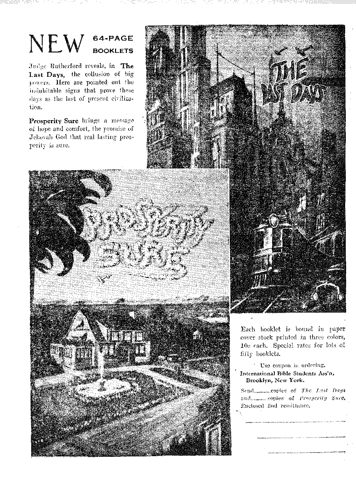

A NEW CALENDAR
BAKING POWDERS
AND. COOKING
UTENSILS
THE BIBLE NOT
WRITTEN FOR ALL
NEWy WORLD!
THE EARTH TO BE MADE GLORIOUS
V©L IX Bi-Weekly
April 18,1928
OLD WORLD DYING
5$ a copy $ LOO a Year Canada and Foreign.Countries $-150
iKT.ll
V&—-w.7..".— ..„ ._— :. .- - ■ir~=.7——■~"~-~7.--7-.KS
Social and Educational
j IL'ttlio in Hotels, Schools, and Trains ...........
I Itadio and the Fishing Business .............
| Twenty Prisons for Sale .............. .
j
j Finance—Commerce—Transpobtation
i Automatic Industry Inevitable ............. 451
। On the Wings of the Wind ...............
i Political— Domestic and Foreign
i Uncle Sain Helps Pay League Expenses ..........
<j; Palestine a Peaceful Place ........... ...
1 Expenditures for Armament ..............
i A I’esult or Major Holmes’ Visit (?) ........... 45!)
. Science and Invention
New Device for Sky Writing .............. 451
The Study of Lenin's Brain .............. 452
Carbon -Dioxide Ice ................... 452
Cro-Magnons Still With Us .............. 454
Home and 'Uwi.tu
Baking Powders and Cooking Utensils ........... 455
■ Travel and Miscellany
, Proposals foe a New Calendar .............. 457
Religion and Philosophy
No Converts in 11,394 Churches ............. 453
Encouraging to Bible Students ........... . 453
Doctor Cadman’s View ................ 454
. Bible Questions and Answers .............. 460
The Earth to Be Made Glorious ............. 461
What about the Heathen? (Part. 7) ........... 467
The Bible Not Written foe the World in Generat. ...... 4-71 .
Religion and the Bankers in Evansville .......... 477
Messengers of Jehovah (Part 1) ............. 478
The Children's Own Radio Stout ............. 479
Published every other Wednesday at 117 Adams Street, Brooklyn, N. 1’., U. S. A., by WOODWORTH, KNORR & MARTIN
Copartners anti Proprietors Address: lit Adams Street, Brooklyn, N. Y., O. S. A.. CLAYTON J. WOODWORTH . . Editor ROBERT J. MARTIN . . Business Manager NATHAN H. KNORR . - Sec’y and Treas.
Five Cents a Copy—$1.00 a Year Make Remittances to THE GOLDEN AGE Notice to Subscribers: We do not, as a rule, send a card of acknowledgment for a. renewal or for a new subscription. A renewal blank (carrying notice of expiration) will be sent with the journal one month before the subscription expires. Change of address, when requested, may be expected to appear on address label within one month. Foreign Offices : British .... 34 Craven Terrace, Lancaster Gate, London IV. 2 Canadian .......... 40 Irwin Avenue, Toronto Ontario Australasian ........ 405 Collins Street, Melbourne. Australia South African ...... 6 Lelie Street, Cape Town, South Africa
Entered as second-class matter at Brooklyn, N, Y., under the Act of March 3, 1879
Volume iX Brooklyn, N. Y., Wednesday, April 18, 1928 Number 224
Automatic Industry Inevitable
By Water or by Air
Dr. Henry D. Hubbard, scientist and secre
tary of the United States Bureau of Standards, is authority for the statement that such progress has been made in standardization of all the things made and used by men that it is certain that industry a hundred years from now will be automatic. Wonder how the owner of the machines will feel then; and wonder also how the other fellow will feel, the man who has absolutely nothing to do.
The Brown Brothers Seligman War
ONLY Congress has the right to declare war;
and hence it must be assumed that the Nicaraguan war is that of Brown Brothers and Seligman, who financed Diaz. It is claimed that the original intervention of the United States in Nicaraguan affairs was all based on the seizure of a locomotive and two flat cars. Three official explanations have been given as to why American -Marines are there, opposing a red menace, protecting property and stamping out banditry. Believe whichever explanation suits vou best.
Uncle Sam Helps Pay League Expenses
DVOCATES of the League of Nations proudly point to the fact that although Uncle Sam is not a member of the League of Nations, yet, next to Great Britain, he pays more toward keeping up its expenses than any other nation. He pays the same sum into the League of Nations treasury as does Britain.
Useless and Repulsive War Relics
THE Manchester, England, parks committee has decided to get rid of all the tanks and guns which clutter up their parks, on the ground that they are useless and repulsive.
VXT'IIETHER the business man of the future ’ ’ will travel across the oceans by water or by air will probably be determined during 1928. It is expected that about September, possibly earlier, the British dirigible R-100 will make test flights between London, New York and Montreal. If these flights are as successful as hoped for and expected it may be set down as certain that an immense world travel by dirigibles will be inaugurated. The R-100 is made five times as strong as the Shenandoah.
Radio in Hotels, Schools and Trains
HE Statler hotels are equipped with radio in every room, at a cost of about one million dollars. Many schools are being fitted with receiving sets, with a view to receiving the Dam-rosch musical lectures and lectures on other topics. Railroads have found radio connection between the engines and cabooses of long freight trains is entirely practical. The latter is bound to result in saving the lives of many brakemen.
Radio and the Fishing Business
RADIO has transformed the fishing business.
Every fishing-smack imw carries a receiving set, not only insuring night entertainment for the men but providing them with weather reports ’which, are of incalculable value as protection from storms and in the fishing operations themselves.
New Device for Sky Writing
Y A new device for sky writing it is possible to write messages or draw pictures on the
clouds at night. The machine, which is of German design, consists of a high-powered carbon light, strengthened by projectors and lenses, launched out into the sky by means of a stencil.
How to Get Cold
NE of the best ways to get cold and stay cold is to keep the windows closed, avoid the use of vapor pans in connection with the heating apparatus and then drive the aforesaid heating apparatus for all it is worth. The resultant dryness of the skin makes i.t sensitive to the least draught, and a good, deep, heavy cold can thus be brought about in a short time, with an eventual visit from the doctor and the undertaker.
Value of White Flour
ERSONS who have suffered life-long miseries from eating white bread and have subsequently gained health from changing to entire wheat bread will be interested in the opinion of the California Department of Public Health, that white flour is best and that the whole wheat is unsafe. And they will wonder, too, if the doctors that have drugs for sale and the millers that have white flour for sale were back of the opinion. _
The Study of Lenin’s Brain
NT ARTICLE in the New York Times reports that a scientific examination of Lenin’s brain, in which the brain was cut into 31,000 sections and then examined under the microscope, reveals that it was of the highest type, far above normal. One wonders whether it would suffer by comparison with the brains of the Teapot Dome and Muscle Shoals variety of statesmen of the western world.
Carbon Dioxide lee
ARBON dioxide ice, made of solid carbon dioxide, frozen to a temperature of 109 degrees below zero, has the advantage of water ice in that it evaporates more slowly and leaves no liquid behind it as it evaporates. It is already in use for the refrigeration of fruit cars and will no doubt come into wide and general favor,
World-Wide Movies
IT IS predicted that a new British invention will make it possible to show moving pictures in all parts of the world with but little delay. The invention makes it necessary that the rate be held'down to two exposures a second, but it is estimated that after an hour’s delay the pie-■tures can be shown at the usual rate of speed.
Twenty Prisons for Sale .
WENTY British prisons are for sale, at prices ranging from $25 to $135,Q00. The British people are finding less and less reasons for locking up their fellow men, which seems all the more remarkable to us because there is much unemployment and no attempt at prohibition of liquor. Most of the prisons carry with them a gallows that has seen use and a private graveyard.
Palestine a Peaceful Place
ishop Godbig Kean, of Jerusalem, declares that a few years ago one who went outside of the walls of the city took his life in his hands, but that now robbery and violence are unknown, that Palestine is now one of the most peaceful places within the .British Empire and that the outlook for the country is very hopeful indeed.
Nile Level Abnormally Low
THE dams across the upper reaches of the
Nile have so lowered the waters at the season when Egypt is accustomed to look for a flood that it became necessary for the Egyptian and Sudan governments to bring one about artificially. It is claimed that these dams are destroying Egypt.
Stefansson and the Far North
ii.hjalmur Stkfansson', noted explorer and author, claims that the Eskimos do not live in igloos and can not and do not drink oil, that the annual snowfall at the North Pole is negligible, that the summer temperatures there are up to 100 in the shade and the winter temperatures not colder than in Montana, and that in tire most northerly part of the world there are 850 varieties of flowering plants, and spruce trees 100 feet in height.
Cape to Cairo Trips
HROUGH travel from Cape Town to Cairo has been inaugurated on a regular schedule, by rail, motor and boat. People who have the money can now go anywhere, and with unbounded comfort. One of the trains from New York to Southern California is now equipped with dancing floors, gymnasium, moving pictures, stationary beds, barber shops, bath, tailor, maid, press reports, radio, library, etc., etc. The longer and more expensive the trip, the greater the age of the travelers.
Zeal for Movies
IT USED to be that mothers loved their children, and some of the good old-fashioned kind ■still wst, but an investigation in Hagerstown, Md., shows that many mothers there dope their children with laudanum, so that they can get away and get to the movies. The judge who investigated the matter says that the next-mother who comes before him on such charges win get two years behind bars io think it over.
On ike Wings of the Wind
FAVORED by a wind from the west, and by good visibility, pilots Garrison and Westcott, of the National Air Transport Company,
Chicago Io Hadley Field. N. J,, 7.19 miles, in four hours and fifteen minutes, actual flying time. Stops were made al Cleveland and Be-lle-
ahead of schedule.
B&ttow Magnets Strongest
rpilE odd discovery has been, made that hollow magnets are stronger thatj sol id ones, in the
Fighting Low Finally Caught
FIGHTING Lou, an • morni'His whale which _________________________Iliidilitillilietlitthe-Hoss sea, off thehihgt of the Shetland islands, and which has been ten years, has finally been caught. Its tongue alone weighed one and one-half tons, its liver three tons, and the whole carcass lens. This whale is known to have taken the lives of three men in previous fights. It took forty men an entire day to kill it, and completely exhausted them.
The Six Points of Agreement
rp.HE six points of agreement between Aiigli-cans and Homan Catholics are set down by
Lord Halifax as, baptism is the door into the church, communion is the sacramental offering of the body and blood of Christ, communion of both kinds is proper, the church must approve any interpretation of the Bible before it can be accepted, the Pope should be Ilie visible head of the church, and the bishops derive their succession from the apostles. To which we add that every one of these six points is nonsensical and unscriptural.
No Converts in 11^94 Churches
npiURTY-TWO percent of all the Prcsbyte-rian, Baptist and Methodist churches in the United States .last year failed to add a single convert. A committee is trying to ascertain the cause. We offer help. The people became disgusted with the churches’ attitude toward war; they do not like the collection and dunning feature, and they know the eternal torture theory is false. All institutions that are based on murder, bogging and torture must give way to the truth. The churches have waited too long. They are done. Coming events cast their shad-
Encouraging to Bible Students
in a Catholic Bible that an indulgence of three hundred days is granted to all who read the Holy Gospels at least a quarter of an hour, wants to know what a good Bible student gets who reads the gospels 36.5 times a year.
Then, not content with. that, he goes still further and wants to know what he gets for reading all the Bible Student literature, past, present
Looks to us as though he is trying to get us in
•tripblesiOhatithhikyoud--st if •• fl ■
V oliva and the Flat Tire
VOLIVA has a flat tire; that is to say, he thinks the earth is flat, something like a-pie dish, and that it will blow up in seven years. Poor Voliva! If he is still alive eight years from now lie will find the good old earth whirling around once every twenty-four hours, th®-same as now. The Bible Students are the only ones in the world that know and believe the Bible—that the earth will abide for ever.
Onward Christian Soldiers
THE German Government is trying to find out . why St. .Michael’s Boman Catholic Chureii in Munich contained two hundred machine guns, one hundred sabers, several thousand pistols and a large quantity of ammunition and spare parts for the guns. Somehow we do not seem to be able to remember any place in. the Bible where it tells about Christ and the apostles being loaded down with instruments for the destruction of their fellow men.
Expenditures for Armament
IN 1913 the United States expended for armament $240,270,352; in 1927,' $580,118,400; in
1913 Great Britain expended for armament $355,807,032; in 1927, $509,569,600; in 1913 Italy expended for armament $125,507,252; in 1927, $182,809, 440; in 1913 Japan expended for armament $58,626,664; in 1927, $215,624,274. These four countries expended for armament in the year 1913 $780,211,300 and in 1927, $1,-488,121,714.
Cro-Magnons Still With Us

LITTLE while ago we heard much about those ancient men, the Cro-Magnons. Now conies Doctor Hrdlicka and makes the suggestion that the North American Indian is his lineal descendant. They have similar skulls and faces and each buried red ochre with their dead, resulting in staining of the bones.
Three Wealthy Men Control British Opinion
REE wealthy men, Lord Beaverbrook, Lord Rothermere, and Sir William Berry, and their associates, control ninety percent of the morning, evening, weekly, fortnightly and monthly journals, circulating libraries and book publishing enterprises of Great Britain, and through these they absolutely control British public opinion. The liberal and labor press of England lives a hand-to-mouth existence.
The Uses of an Admiral
TT TRANSPIRES from evidence submitted -k by’ him before the naval court of inquirv that the admiral in charge of all the "submarines on the Atlantic coast knew nothing of submarines, nothing about rescuing imprisoned sailors and did not know the imprisoned men of the S-4 needed air, nor whether any steps were taken to see that they got it. He looks fine in his gilt braid and buttons.
Doctor Cadman’s View
TN AN article in The Forum Doctor Cadman, head of the Federal Council of Churches of Christ in America, makes the surprising statement: “I affirm the sacred duty of the Christian. Church, Catholic or Protestant, to intervene in any political controversies which deeply involve public morality and welfare/'’ But in an article in the American Review of Reviews the same Doctor Cadman, in an effort to explain the prevalence of crime says that the widespread demoralization and anarchy which ensued after the war followed as a natural sequence the ‘’‘fatuous promises of a new world fit for heroes and heroines to live in”. It is a wonder that Doctor Cadman and his friends do not remember the great part they played in giving life to those same fatuous promises and interference in political affairs.
F)R biting irony it would lie hard, to find anything that would surpass the following which appeared in the London Baily News (founded in 1846 by Charles Dickens). Ridiculing the king’s speech to the House of Commons the News in its issue of December 23 editorially gave the following as “The Real King’s Speech”:
My Lords and Members of the House of Commons:
I have followed with constant interest the repeated failures of my Government to perform any" of the tasks which they have from time to time undertaken.
My Government came into office deeply pledged to assist agriculture. The depressed condition of agriculture has long been a subject of anxiety to me. Ko attempt has been made to relieve it.
The question of economy has also occupied the time and attention of my Government. The circumstance that the national expenditure has actually risen lias been more or less adroitly concealed. The proposal to abolish three Ministries, which would have effected a small economy, lias now been abandoned.
Nothing is of more importance for the revival of British trade abroad than the lowering of foreign tariffs. A promising movement towards this goal is now in progress. I note with satisfaction that my Government’s repeated obstructions of this movement have so far been without any absolutely disastrous result.
The development of the road system is obviously one of the most pressing and urgent needs of British industry today. My Government’s action has delayed indefinitely adequate development in this field.
My Ministers had intended to introduce a Bill to secure better conditions in factories. This measure is long overdue. It appears now to be postponed indefinitely.
Certain proposals for the reform of the House of Lords were also at one time favorably entertained by some of my Ministers. These have been abandoned with even more than their usual precipitancy, for reasons which appear to me to be well founded.
1 am glad to record that my Government have in fact done almost nothing, because judging by what they have done the results would have been far worse if they had done more.
Relations with Russia, have been broken off for reasons neither more nor less valid this year than at any time since these relations were resumed. The result has been grievous injury to British trade without any compensating advantage whatever.
An Act has been passed which will probably prove unworkable in practice, but of which the immediate effect was greatly to embitter class feeling and make the industrial peace, which I earnestly desire, more difficult. I am glad to observe that in this direction also the efforts of my Government are proving as ineffective as usual. I earnestly trust that the public spirit and common sense of the majority of my subjects will continue to resist the unnecessary provocation offered by this mischievous measure.
An invitation was accepted by my Government to attend a conference with representatives of the United States and. Japan at Geneva with a view’ to substantial reductions in naval strengths and costs. No serious preparation was made by my Ministers for these discussions, and they allowed their policy throughout to be dictated by experts; with the result that the United States Government has now proposed a gigantic new naval programme, and my Ministers have lost the assistance of one of the ablest of their colleagues.
It is my earnest prayer that the blessing of Providence may rest upon these labors. I regret that I am unable to see any adequate reason why it should.
]VFOST homes use baking powders and cooking utensils, and it ought to be of interest to everybody to know to what extent, if any, these tilings may be the means of undermining health and shortening life.
Although their sale has long been prohibited in France, England, Belgium, Germany, Switzerland and most other civilized countries, the manufacture of baking powders containing alum (sodium aluminum sulphate) has rapidly increased in the United States, and much of all the cooking is done in aluminum cooking utensils. Alum baking powders are cheap.
Wisconsin and other states require the word “alum” to be used in the ingredient clause on the label when any compound of aluminum is a constituent of baking powder. There are baking powders which contain no compounds oil aluminum, but have as their active agent cream of tartar, which is obtained from grapes. Cream of tartar baking powders are expensive.
The reason alum baking powders are cheap is because the alum (sodium aluminum sulphate or sodic aluminie sulphate) is derived from bauxite, a mineral substance containing a large percentage of aluminum.
Parke, Davis & Company, one of the largest drug firms in the country, in theii' manual of therapeutics say concerning alum: “Powerful astringent (causes living animal tissue to contract). Rarely used internally, except in painter's colic.”
Col. Victor C. Vaughan, M. D., LL. D., forty-five years a teacher in the University of Michigan, a specialist in poisons and their effects, testifying before the Federal Trade Commission, said in part:
A poison is a substance of a definite chemical composition, which by virtue of its constitution is capable, when brought in contact with the tissues of the body, of modifying the cellular activity of one or more organs to such an extent as to impair health and possibly to destroy life.
Practically, alum is the only salt of aluminum from, which poisonous effects are likely to result. This is true merely because alum is the only soluble salt of aluminum that is widely used. All salts of aluminum are poisonous when injected subcutaneously or intravenously. The researches of Siam, confirmed by those of Doelken, have demonstrated that the lesions induced by the subcutaneous administration of salts of aluminum, are extensive and serious. In animals they found the lesioM' of “metallic kidney” and fatty changes in the anterior horns of the spinal cord.
Tn 1909 I made some experiments on the effect of aluminum hydrate upon gastric digestion. This was done in test tubes in laboratories, not done in the animal body, and I found that the addition of aluminum hydrate delayed the digestion of egg white by the gastric juice. I found that a given gastric juice, without any alum in it digested 93.9% of the egg white in a given time; while with the addition of aluminum hydrate, it digested within the same time, only 57.5%.
■ In 1900, even before Dr. Mallett’s work, I said that aluminum must be absorbed; and testifying before a Senate Committee I testified that it would be difficult
for all of the alum to escape absorption. My conclusion body. _ _
iliiBliiiiiWiiiikrt .
iic-n. In fact, they luiirt be absorbed before they can
lllidburse, would not be absorbed. Even metallic arsenic Prison until it is converted into the oxide; Metallic copper is not a poison unless it is very finely divided, in which case it may be digested with the gastric juice, and so on.
ol •BOd;pbisblsihy :s»bO
by the blood and the lymphs to every part of the body, .various...parts of the body. It does. not. have to go tidd®ryipari;!di®drbb3yyh®
may add something foreign; and they may take some-
of the living tissue. By either one of these means, they may harm the tissue. Then the body strives to get rid of these things by eliminating them and pouring them back into the intestines, and they may then be reabsorbed again, and may go around.
The point I want to make is that if you could prove that every particle, iota, of this substance, administered by: mouth, is eliminated by the feces, through the feces, or with the feces, it would not show that it had not poisoned the animal. A man may die from arsenical poison, and after his death no arsenic be found in his body. The poisoning is accomplished while this substance is traveling around. Then the tendency of the blood is to eliminate, in part at least, all poisons, into the alimentary canal ; that is the way of getting rid of it ; and the same thing is true of typhoid bacilli, and of various Other poisons. .
The testimony of Dr. Harry Gideon Wells, Professor of Pathology, University of Chicago, and Director of Medical Research of the Sprague Memorial Institute of that city, is even more pointed:
As far as I have been able to find, these investigators have all observed that the effect of these compounds upon, the living cells was deleterious even when the aluminum compounds were present in remarkably small quantities. The growth, of algae is either prevented or checked. Bacteria was found to be inhibited or cheeked. Animal forms, such as the egg of the sea urchin, had been reported to be affected so that the cells which have been fertilized can not continue to multiply or when aluminum is applied before fertilization is attempted, fertilization will, not take place.
Whenever the living cells of the lower animal or plants come iu contact with aluminum compounds, those t-c-lls arc injured or killed, depending upon the eonceniration.
There are eases J eported in the literature of death following the taking of 30 grams, approximately one ounce of alum in solution. The use of aluminum compounds in surgery lias boon abandoned largely because of the injurious effect upon human tissues. The administration of soluble compounds of alum by motith is followed by evidence of irritation to the. gastro intesimal tract Daily dos<>s of aluminum salts in quantities of ,-20 to 28 milligrams per day to dogs, cats, and other animals lead to inflammation of the lining of the digestive tract, especially the intestines. When injected into the. tissue so that it comes in contact with living cells, it is found to be a virulent poison. Aluminum has been ’ found, to produce injury, especially to the kidney; in the observations of physicians, MttniihWTnoBipoiiiids .t taken by men 3sot only produce injury to the digestive tract, but injury to the nervous tissue.
Aluminum compounds, if in solution, may pass into the blood stream by diffusion through the cells of the digestive tract. This diffusion may take place in any part of the digestive tract from the lips to the anus so Hurt the whole of rhe digestive tract may be affected. They may pass into the blood, along with fats. The moment an aluminum compound has passed through or into the wall of the intestine beyond the surface and entered the blood vessels of the intestinal wall, it will come in contact with the red corpuscles and cause those corpuscles to aggregate or clump and have opportune v to produce this injurious effect exactly the same as if the aluminum compound had been injected into the blood directly. The lencteney to aggregate is a serious matter since the aggregated corpuscles cannot pass through the capillaries of the body, and tends to clog them up. Experiments have shown that when metallic substances act upon red corpuscles to produce such changes in the corpuscles, the corpuscles become more fragile, break up more readily and lead to anemia or the reduction in the number of red corpuscles in the blood.
It is possible for all the poison that is taken by mouth to be recovered in the discharges from the bowel and yet produce evidence of poison in remote parts of the body..
Aluminum compounds, being protoplasmic poisons, will poison the endothelial cells of the digestive tract (these are, the cells which line the digestive- tract and come in immediate contact with food and. drink). They not only have the function of lining the tract, but a very important function in protecting the rest of the body. Poisons of great potency might enter the digestive tract in large quantities and be prevented from causing any harm, to remote tissues as long as these endothelial cells are uninjured, but if injured, this defense is Jost.
It is my opinion that the primary result of the introduction into the digestive tract of aluminum compounds would impair the protective lining of the intestine and thereafter the effects upon the other cell growth of the body, including the blood cells, would be cumulative. It is the general characteristic of metal, poisonings that their effect is cumulative.
Now with these cumulative poisons, the effects fail of repetition frequently because they have to some extent impaired the functions of the body, as its resistance to other unrelated injury is reduced and consequently they suffer more from these injuries than an otherwise normal person would, and the damage is attributed to this new cause which has nothing to do with chronic metallic poisoning.
These results may occur because of large doses but they may come from small doses of aluminum compounds administered over a considerable period. A small quantity acting for a long time may produce results quite as marked as a larger quantity acting for a shorter space of time.
The resistance of the intestinal wall to bacteria would
be reduced and they would get a foothold, and begin to grow there when they could not do so in a normal intestinal wall. •
There arc two effects to be observed at the introduction into the human digestive tract of aluminum compounds, the direct effect of carrying the substance into the circulation, and an indirect effect in the intestine and in the arterial tract rendering the human organism more susceptible to disease.
In my opinion, the effect of aluminum compounds, the passing into human, system by absorption would make themselves felt in the reproductive organs. The cells of these organs are particularly sensitive to the action of any poisonous substance and often show marked changes when changes in other parts of the body are undiscover-able even by careful microscopic studies.
My opinion is that aluminum compounds are poisonous to.all forms of life, including the higher animals.
A SIDE from the fifty-two .Sundays in each year there are 275 other days that are celebrated as holidays by some country or some section, which is a fair illustration of how badly mixed humanity is in its time-keeping affairs.
Calendar-making is an arbitrary business. The international day begins and ends at the meridianal line 1.80 degrees from Greenwich, running through Bering strait and irregularly through the 'Pacific ocean. East of the line is dated one day earlier than west of it.
Westbound steamers which cross the line at midnight on Saturday night have no Sunday that week, but skip to Monday. Eastbound steamers which cross the line at midnight on Sunday night have two Sundays in succession.
The Jewish calendar divided the year into lunar months, twelve in each year, intercalating a thirteenth month when necessary to maintain the correspondence of the particular months with the regular recurrence of the seasons. The intercalary month was necessary seven times in each nineteen-year period.
Every now and. then some wise ones get hold of the Biblical accounts of the lives of the patriarchs before the Flood and try to tell us that prior to that time a year was only one of our mouths. But they forget to explain how it is that Cainan was a papa when he was only seventy months old and a grandpa when he was only 135 months old. 'What a cute little grandpa Cainan must have made when he was only eleven years and three months old. The Ladies Home Journal fell for this foolishness.
The Cycle of Cathay
ATIIA.Y is China, and a cycle there is sixty years. China is now in her seventy-seventh cycle, which began in 1924 A. D., and her chronology therefore dates back to 2,637 B. C., or 150 years before the Flood. If is hardly supposable that the record has been accurately kept. By some it is believed that the Chinese really try to date their history from the year the Flood dried up and. get it as near as they can.
The calendar in general use among the nations of the world at this time may be said to have had its rise in Egypt. It is said that the Sphinx, facing east, originally wore at the crest of its forehead the earven. image of an asp. The asp’s head at sunrise cast a shadow along the Sphinx’s body. From this shadow grooves were cut, and. from these seasonal markings the Egyptians finally worked out the true length of the solar year. SGolq days, less a fraction.
The Egyptians had twelve months of thirty days each and placed their five odd. days at the end of the year, which theoretically began oW or about July 13, when the star Sirius, after, having been invisible for a long time, began to reappear in the eastern, morning sky. The Egyptian week was ten days long, the five odd days not being counted as ir= any week. The Egyptians finally became tangled on the leap year proposition. Their New Year kept getting earlier and earlier until finally it was all out of adjustment with the original intent. By this method of calculation once in every 1,461 years they fell an entire year behind.
The Greeks hit upon the method of correcting their calendar once in every nineteen years, but their combination of the Jewish and Egyptian calendars was not a success and resulted in much confusion. This confusion spread to the Roman calendar, but they added a few special inixups of their own.
The Julian Calendar
STUMBLING along in tin; track of the Greeks, the Roman calendar, thanks to the ignorance and politics of the Ponti lex Maximus, who had the matter in charge, got two months out of balance, and when Julius Caesar came to the throne he took the matter in hand.
lie invited the Greek astronomer Sosigenes to Rome and between them they put fourteen months into the year 46 B. C. and put the vernal equinox back where it belonged. Then they fixed on the months as we now have them. Julius named the month of July after himself, and because he was superstitious and regarded even numbers as unlucky7 he put in thirty-one days, instead of thirty.
His successor Augustus was just as superstitious and in the month of August, which is named after him, in order to get thirty-one days he borrowed one day from February. At the same time he shifted September 31 to October 31 and November 31 to December 31.
Until Caesar took the matter in hand the pontiffs had been administering the calendar to suit themselves and possessed the authority to inject additional days into it at their discretion. They did this when they7 happened to think of it, or when, as Caesar discovered, they wanted to lengthen the terms of magistrates, or hasten then’ exit from the scenes.
The Julian Calendar continued in general use throughout Christendom until 1582, when Pope (Gregory, noticing that the church festivals were noticeably changing in season, decreed that the fifth of October should be the fifteenth instead, and that the last year of each century, three times out of four, should not be a leap year.
The Gregorian Calendar was adopted in England, in 1752; in Japan, in 1873; in China, in 1912; 'Russia, in 1918; Rumania, in .1919; and in Greece, in 1923. ‘When the Gregorian Calendar was adopted in England mobs raged in the streets demanding that they bo given back their eleven lost days; and when the Greek Patriarch finally consented to the adoption of the Gregorian Calendar some lover of the old Julian Calendar retaliated by coming upon him suddenly- with a pair of shears and haggling off oise corner of his beautiful beard, thus complicating whiskers with feast days in almost in-ex tri cable confn»ion.
Muhammed and the French Revolution
TK/TOflAAlMEl) took a hand at calendar-mak-XVX Ing, v;as not g gllc?,>s,s. JHS months were purely lunar and, as no adjustment was made to keep them in touch with the solar year, once in every thirty-two and one-half years his calendar made a revolution, a particular month having in the meantime appeared in all seasons, Mohammed bungled this as he did everything.
In the French Revolution an elaborate attempt was made to inaugurate a scientific calendar. There were twelve months of thirty days each, and to complete the year there were five fete days (six on leap year) added at the •'•lose of the year. '
There were ten days in each week, called respectively primod, duodi, tridi, quartidi, qmn-tidi, sextidi, septidi, octidi, ninidi and decadi, which latter was the sabbath.
There wTere new names for all the months, vendemiare, brumaire, frimaire, nivose, plu-viose, ventose, germinal, floreal, prairial, messi-dor, thermidor and fructidor, meaning respectively, in English, vintage, foggy, sleet, snowy, rainy, wfindy, bud, flower, meadow, harvest, hot and fruit.
The year began with the fall equinox, about September 22. Each season, autumn, winter, spring and summer had three thirty-day months, and each month had thi’ee decades or weeks. The five or six fete days were not in any week. In 1805 the Gregorian Calendar was reestablished.
The Mayan and Liberty Calendars
QN DECEMBER 10, 580 B. C., the Mayan Indians inaugurated a perfect calendar which ran for two thousand years wjfhoiit the loss of a day. The Mayan books and the. Mayan civilization wore destroyed by the Spanish Inquisition in Yucatan, in 1561 A, D. The Mayan 'Calendar was based upon the fact that the planet Venus makes a reappearance in the same phase once in 584 days.
The Liberty Calendar, now being largely written up in the American press, because of its American origin, is one of 137 calendar proposals now up before the League of Nations. It proposes- thirteen months of twenty-eight days eaeh, with one day at the end of the year not in anj’ week or in any mouth. The extra day in leap year would be put in midsummer between June and July, but not in any week or month. This calendar has its good features.
Payday would always come on the same day of the week and the same day of the monlh. Business could be better regulated. No printed calendars would ever be necessary. Everybody would know that the first day of every month is Monday, and the last day of every month Sun-i < < <
Such a calendar would be a trial to Jews. Seventh-day Adventists and a few superstitions people who do not know that God gave Uis sabbath law only to the Jews, and never at all to the Gentiles, and who imagine that, in some mysterious way, Sunday has taken the place of the day which He fixed and which the Jews have observed from time immemorial and still observe. :
The true year consists of 365 days, 5 hours, 48 minutes, 46 seconds. The calendar figures out 26 seconds too long. This excess would amount to one day in 3,323 years. It has been proposed to make the year 4,000 and all its multiples leap years, which would reduce the disparity to less than one day in 20,000 years.
If the new calendar goes into effect we beg to suggest that it should date from the end of Gentile Timos, August 1, 19.14, the time when our Lord took to Himself His power and began His long-promised reign.
AT THE end of November, 1927, two days after the funeral of the late Admiral Bullard, Major J. P. Holmes visited Washington enroute to Chicago, asking for a better wave length for certain I. B. S. A. radio stations. A few days later (December 18) the following appeared in the Springfield (Mass.) Sunday Union and HepuMican. It does not seem to have received any general circulation and only recently came to our attention: '
COMMISSIONER THREATENED MUTH THE WRATH OF
GOD
Triple Death Theory Scared. Pickard When Pneumonia Developed from Overwork
Washington—Radio Commissioner Sam Pickard lias just recovered from, a serious attack of grip, and therein lies a story.
On the day Rear-Admiral Bullard was buried, the occupants of the radio commissioner’s car in the funeral train were commenting on the suddenness of his death. Then the talk turned to the death of Commissioner Dillon. One of them said:
“Have you ever heard the theory that deaths like that do not go ih pairs? The theory is that when two members of a body die like that, there is always a third death within a short time.”
Looking around him, he asked more or less seriously and perhaps with a trace of nervousness: .
“Which of us will be next?”
The radio commissioners are sensible men, but they are developing “'nerves” because of the strain which they have been under in attempting to improve broadcasting reception.
Two days after the funeral, it was necessary for Pickard to refuse a better wave length to a station owned by a religious institution. The owner of the station preached a sound sermon to Pickard on the subject.
“'God already has taken two of the members of this commission,” said he. “Mark my words, he is going to take more of you unless you give ns a wave that is better for sending out the Word of God.”
Pointing his finger at Pickard, he added:
“God is going to avenge this wrong you have done him by refusing to let his voice go out on the air on a good wave length.”
Pickard told his associates about the incident. He also told his wife.
The next evening at an important meeting of the commission, Pickard’s head became dizzy. He stood up, reeling, and fell to the floor in a faint.
When Pickard recovered, his associates jokingly reminded him of the statement of the owner of the religious station. But it was evident that their humor was a little strained.
Pickard was taken home.
“’Pneumonia,” said the doctor. “He’s in bad condition. He’s been working too hard.”
It was several days before the cold was under control. Then for the first time, Pickard was able to laugh about it all.

UESTION: What proof have we that you are giving the correct explanation of the
Bible? ~ "
Answer: The only proof that any one has that an explanation is correct is by a comparison with the scriptures on the point at issue. The true explanation should be in harmony with all the scriptures relative to the point involved; otherwise it is error. For instance, if a clergyman tells me that the soul is immortal, and cites as his reason the statement of Jesus upon the cross as is recorded in Luke 23 : 46, "Into thy hands I commend my spirit: and having said thus, he gave up the ghost”, to this the Christian would reply that the scripture does not prove the immortality of the soul. What Jesus said and meant was that Hie committed his right to life into the hands of the heavenly Father, and this right to life with the accompanying life rights were given to him on the third day there-affer at His resurrection. Jesus really breathed out His breath, the wind, when He died; and the word translated “spirit” in the text is the Greek word pnewna, meaning wind. There was only one Being in all the universe who possessed immortality before the resurrection of Christ Jesus, and that Being was the Father, Jehovah God; for of Him we read in 1 Timothy 6:16, “[God] only hath immortality.” Christ Jesus was given immortality the third day after His crucifixion when He was raised from the dead in the resurrection. In Isaiah 53:12 we read concerning Jesus, “He hath poured out his soul unto death: and he was numbered with the transgressors.”
The Scriptures are positive that the soul is not immortal. In Ezekiel 18:4 we read, “Behold, all souls are mine; as the soul of the father, so also the soul of the son is mine: the soul that sinneth, the same shall die.” (Douay Version) In Ezekiel 18:20 also we read, “'The soul that sinneth it shall die.” (Douay) In Joshua 11:11 we read concerning the destruction of souls in battle when Joshua smote the Hazorites: “And they smote all the souls that were therein with the edge of the sword, utterly destroying them; there was not any left to breathe.” Jesus said, as is recorded in Matthew 10:28 (Douay Version) : “Fear ye not them that kill the body, and are not able to kill the soul [meaning the right to. life]: but rather fear [reverence] him that can destroy both soul and body in gelienna [pit of destruction].” In Psalm 145: 20 we read, “All the wicked will he [God] destroy.”
We see then that souls are not immortal, but that immortality is the gift to the faithful. It is only by obtaining the harmonious conclusion of all the scriptures on a given point at issue that we know that we have the truth relative to that particular subject.
Question: Why do you not believe those who have been explaining the Bible, the priests and the ministers ?
Answer: Because we find that their explanations are not in accord with the-Bible. Every Christian has a right to test the statements of any individual by the infallible Word of God, the Bible. In Isaiah 8: 20 we read, “To the law and to the testimony: if they speak not according to this word, it is because there is no light in them.” The Bible clearly teaches that it is pleasing to the Lord that the Christian should, by applying the scriptures, test the doctrines that are taught. When the Apostle Paul was preaching to the Bereans, the Bereans were Bible students and searched the Scriptures daily to determine what even the Apostle Paul was teaching them. We read in Acts 17:11, “These were more noble than those in Thessalonica, in that they received the word with all readiness of mind, and searched the scriptures daily, whether those things were so.” How many church-goers search the Bible daily to see and determine whether the things which the preachers are telling them are correct? The difficulty today is that church-goers neglect the study of the Bible and have become blinded as to what is the truth. It is time to awake; determine to serve God; and search the Bible in order to know7 what is pleasing to God.
from Station WBBB,
[Broadcast
THEBE are two separate and distinct meanings to the word earth as used in the Scriptures. One, the literal meaning, is, the mundane sphere on which the human race resides; and the other, the.. symbolic meaning, is, the visible part of the organization of which man is a part and to which mankind is subjected.
There are two meanings to the word heaven: first, the abiding place of Jehovah and His pure and holy angels, which is the literal meaning thereof; and second, the invisible organization to which man is subjected, whether that be evil oi' good.
The world is composed of both heaven and earth. The invisible part of the organization to which man is subjected is called heaven, while the visible part is called earth; and the two taken together symbolically are called world. For this reason the world is properly defined as mankind organized into forms of government under.the supervision of an invisible overlord and his servants or allies.
The Scriptures speak of God riding upon the heavens of the heavens. This is a pictorial expression of the loftiness of Jehovah above all creation. He is the Most High, and besides Him there is none like unto Him.
God created the literal earth and placed a perfect man upon it. Only Eden was then glorious. All other parts of the earth were unfinished. Our English word cursed is used to apply to the earth outside of Eden, which really means an incomplete or unfinished condition. The perfect man Adam and his perfect wife Eve constituted the beginning of the symbolic earth. They were under the supervision of the overlord Lucifer. Lucifer by reason of his ambition caused sin to enter into the world. His name was then changed to that of Satan the Devil. Because of lu’s sin Adam was driven out of Eden into the unfinished earth. Associated with Lucifer ‘were pure and holy angels whom lie defiled and they became a part of his wicked organization. It is written: “And it came to pass, when men began to multiply on the face of the earth, and daughters were born unto them, that the sons of God saw the daughters of men that they were fair; and they took them wives of all which they chose.”-—Genesis 6:1, 2,
The offspring of the materialized angels who cohabited with human women were desperately
New York, by Judge Rutherford-1
wicked, and therefore it is written: “The earth also was corrupt before God, and the earth was filled with violence. And God looked upon the earth, and, behold, it was corrupt; for all flesh had corrupted his way upon the earth. And God said unto Noah, The end of all flesh is come before me; for the earth is filled with violence through them: and, behold, I will destroy them with the earth.”—Genesis 6:11-13.
Here the word earth, is used symbolically and means that the visible organization of men was corrupt and God. declared His purpose to destroy it. The great flood was sent to accomplish that purpose. God saved righteous Noah and the members of his family, carrying them over the flood. The inhabitants of the earth therefore were destroyed. After the flood God said to Noah and his sons: “Be fruitful, and multiply, and replenish the earth.” (Genesis 9:1) All people that are now on the literal earth are the descendants of Noah; and, since Noah was a descendant of Adam, all men are descendants of Adam.
Jehovah God, the great Creator, made the earth and placed man upon it and made it for man’s habitation. “I have made the earth, and created man upon it: I, even my hands, have stretched out the heavens, and all their host have I commanded. For thus saith the Lord that created the heavens; God himself that formed the earth and made it; he hath established it, he created it not in vain, he formed it to be inhabited; I am the Lord, and there is none else.”—Isaiah 45:12, 18.
The earth never did belong to man. “The earth is the Lord’s, and the fulness thereof.” (Psalm 24:1) It is the good pleasure of the Lord to give the earth to those of the human race who love and obey Him. It is therefore written: “The meek shall inherit the earth.” Meek means those that are teachable, who seek to know the Lord’s way and who are anxious to do it.
Following the great, flood, God permitted man to go on in his own way and try Ills hand at establishing a desirable government upon the earth. He did not restrain Satan the Devil but permitted him to influence all those of mankind who wanted to be influenced. G-od gave mankind the privilege of choosing good or choosing evil and the most of them yielded to the evil in-
fluence of Satan. God has always had some persons on earth who love and obey Him, but the majority of men do not love or obey God. The period of man’s history has been a time of great testing upon men. Those who love God have been His witnesses on the earth and witnesses to those composing the symbolic earth,. Satan the invisible ruler, and therefore the god of the evil world, has blinded the minds of men and thereby prevented them from seeing God’s great plan for the blessing of the human race.
Conversion
IME and again the Scriptures declare God’s purposes to redeem mankind from sin and death and then to give every man a free, full and unobstructed opportunity to serve God and be restored to perfection. If that is done, then the people living on the literal earth, and forming the symbolic earth, will be to the glory of God. If God should bring the literal earth to the beauty of Eden, then the whole literal earth will be to the praise and glory of the great Creator.
The Scriptures reveal God’s plan to be this: Redemption of mankind by the sacrifice of His beloved Son; gathering out from amongst men a people for His name, who are to be associated with Christ Jesus in His kingdom: and then the restoration of the obedient ones of humankind to perfection. It was in the year 33 A. D. that Jesus was put to death. Three days thereafter God raised Him up out of death. Forty days later Jesus Christ ascended up into heaven and into the presence of Jehovah God. Ten days thereafter, known as Pentecost, God began the selection of the members of Christ, which is the church His body. (Colossians 1:18) From then till the present time God has been causing the message of His Word of truth to be preached upon earth, and by this means He is gathering together the true church. God never gave the members of the church or Christians the authority while on earth to clean up the world. The commission of authority which He gave Christ Jesus and the members of the church His body is stated in these words: ‘‘The spirit of the Lord God is upon me; because the Lord hath anointed me to preach good tidings unto the meek: he hath sent me to bind up the brokenhearted, to proclaim liberty to the captives, and the opening o'f the prison to them that are bound; to proclaim the acceptable year of the Lord, and the day of vengeance of our God; to comfort all that mourn; to appoint unto them that mourn in Zion, to give unto them beauty for ashes, the oil of joy for mourning, the garment of praise for the spirit of heaviness; that they might be called trees of righteousness, the planting of the Lord, that he might be glorified.”—Isaiah 61:1-3.
Briefly summed up, this commission authorizes the Christian to tell the teachable ones the message of truth and to comfort them and give them hope by reason of the truth, and to help each other, as brethren in Christ, to a better understanding of the divine plan.
Cleaning Up
EFERRING again to the question concerning the ‘‘last days and the second coining of Christ”, and the answer given by the distinguished Dr. Cadman, president of the Federal Council of Churches, note that he stated: “Instead of gazing into the sky and asking when He [Christ] shall come, we ought to get busy and clean up the earth in preparation for His arrival.” That statement finds no authority in the Scriptures.
But, you may ask, is it not a proper tiling to clean up? To be sure it is, but to clean up whom? ‘God commands those who start in the way of following Christ to clean themselves up and to keep themselves clean, but nowhere in the Bible is the Christian commanded or authorized to even attempt to clean up mankind in general. The great difficulty is that the so-called Christians, who have formed what is named Christendom, have become so defiled themselves with the uneleanness of the symbolic earth that they have lost sight of God’s purposes concerning mankind. To those who have declared their* purpose of following in the footsteps of Christ Jesus the command is given: “Having therefore these promises, dearly beloved, let us cleanse ourselves from all filthiness of the flesh and spirit, perfecting holiness in the fear of God.” —2 Corinthians 7:1.
Does the cleansing here mean to clean up and put away only the vile and filthy things that afflict humankind? It means much more than that. Every honest person should put away the .things that are impure and wicked. The Christian must go much further. The Christian lias agreed to do God’s will, which means he must keep himself separate and apart from the world.
Satan is the invisible ruler of this world; and the visible part of his organization, or ruling factors in the earth, is made up of profiteers and professional politicians and their allies who scheme to rob the people and keep them in subjection and control. Can a true Christian have any part in these schemes of oppression or support those who do? The Scriptures make definite answer upon this point wherein it is written: “What fellowship hath righteousness with, unrighteousness? and what communion hath light with darkness? And what concord hath Christ with 'Belial? or what part hath he that heli eve th with an infidel? And what agreement hath the temple of God with idols? for ye are the temple of the living God; as God hath said, I will dwell in them, and walk in them: and I will be their God, and they shall he my people. Wherefore come out from among them, and be ye separate, saith the Lord, and touch not the unclean thing; and I will receive you.”—2 Corinthians 6:14-17.
Here is the clear and unequivocal command for the one who is a Christian to have no part in the schemes of men which have to do with unrighteousness. Since this world is under the supervision and control of Satan the Devil, then a true Christian must be separate and distinct therefrom. This is the reason why Jesus said: “My kingdom is not of this world,” but’ it is future.
The Federal Council of Churches is a part of the present world organization and makes no effort to deny the fact. That organization is using the name of Christ and applying it to a worldly organization, of which Satan is the god or invisible ruler, and calling it Christendom. The Scriptures command that the Christians must keep themselves unspotted from the world. (James 1:27) The clergy and the principal ones of their flocks have gone further than merely getting worldly spots upon themselves. They are now a part of the world, insisting that a worldly organization is the political expression of God’s kingdom on earth. This illicit relationship between the Devil’s organization and men who name the name of Christ is denounced .in the Scriptures as adultery. Therefore it is written: “Ye adulterers and adulteresses, know ye not that the friendship of ’the world is enmity .with God? whosoever therefore will be a friend of the world, is the enemy of God.”—James 4: 4.
All who would have the approval of the Lord must cleanse themselves and be prepared for His use when His kingdom is in full operation, A Christian finds it a great fight to keep himself in the proper way. The great majority of those who have professed to be Christian have fallen under the evil influence of the wily adversary. God foreknew that organizations calling themselves Christian would become corrupt and so vile that they would never clean up. They started out with a pure intention and purpose but fell to the blandishments of the evil one. Through Elis prophet Jeremiah God said of and concerning them: “Thou saidst, I will not transgress; when upon every high hill, and under every green tree, thou wanderest, playing the harlot. Yet I .had planted thee a noble vine, wholly a right seed; how then art thou turned into the degenerate plant of a strange vine unto me? For though thou wash thee with nitre, and take thee much sope, yet thine inicjuity is marked before me, saith the Lord God.” (Jeremiah 2: 20-22) Those words were written concerning “organized Christianity” so-called.
That describes the present condition of ee-elesiasticism, showing that they have become so corrupt by forming a part of the Devil’s organization that they are blinded to their own condition and could never even, clean themselves up, much less somebody else.
Now compare these scriptures with the language of the distinguished president of the Federal Council of Churches, who said: “Let us robe the earth with God’s glory in man’s moral achievements, then Christ can come.” Otherwise stated, the Lord Jesus Christ could not come until the Federal Council of Churches would so clothe the earth in the moral achievements of man as to receive God’s approval. Surely God would not commit to a company of people so thoroughly polluted with the Devil’s organization the work of clothing anything with glory to Him, much less making the earth fit for Christ to come to. If the statement of the distinguished gentleman were not so serious it "would be ludicrous beyond description of words. Many a good honest person will be deceived thereby.
Gml’s Work

HRIST Jesus is the great Executor of Jehovah God. God through Christ will clean up the earth and make it a fit place for man. That He will do after His coming. No fallen or impure company of men could do this work. It is written: “For, behold, I create new heavens, and a new earth: and the former shall not be remembered, nor come into mind.” (Isaiah 65: 17) The Lord will not even think about taking over the earth after the Federation of Churches has tried to clean it. By the time the Federation of Churches and its allies get through it is possible for God only to dean up the earth. The proud, haughty, boastful and honorable ones now ruling the earth are the ones that make up the unholy alliance, the profiteers, politicians, and preachers; but their boastfulness and pride shall be brought low and shall come to nought as it is written: “The Lord of hosts hath purposed it, to stain the pride of all glory, and to bring into contempt all the honourable of the earth.” (Isaiah 23: 9) Those inspired words prove that the Federation of Churches will not clean up the earth and robe it with glory.
The organization now controlling the peoples of the earth will be empty because of pride and blasphemy: “'Behold, the Lord maketh the earth empty; and maketh it waste, and turneth it upside down, and scattereth abroad the inhabitants thereof. The land shall be utterly emptied, and utterly spoiled: for the Lord hath spoken this word. The earth mourneth, and fadeth away; the world languisheth, and fadeth away; the haughty people of the earth do languish.” — Isaiah 24:1, 3, 4.
Instead of the Devil’s organization, and particularly the earthly part thereof, preparing the earth for Christ to come to, this is what the Lord says He will do to them: “Lift up your eyes to the [old] heavens, and look upon the [old] earth beneath; for the heavens shall vanish away like smoke, and the earth shall wax old like a garment, and they that dwell therein shall die in like manner: but my salvation shall, be for ever, and my righteousness shall not be abolished.” —Isaiah 51:6.
The evil organization shall pass away in a great time of trouble. That must be done before the Lord’s glory will be revealed to the people. Then He will turn to the people a puse message of truth and remove the blindness from their eyes that they may all, call upon Him. “Therefore wait ye upon me, saith the Lord, until the day that I rise up to the prey; for my determination is to gather the nations, that I may assemble the kingdoms, to pour upon them mine indignation, even all my fierce anger: for all the earth shall be devoured with, the fire of my jealousy. For then will I turn to the people a pure language, that they may all call upon the name : of the Lord, to serve him with, one consent.” ' — Zephaniah 3: 8, 9.
God’s Footstool
TEIIOVAH God is high above all. (Psalm 68: " 33) The earth and all things are beneath. Him. Concerning this it is written: “'Thus saith the Lord, The heaven is my throne, and the earth is my footstool.” (Isaiah 66:1) Instead of committing to an earthly organization the work of making the earth a fit place for Christ to come to, God will do the work Himself of glorifying it. He says: T will make the place of my feet glorious.”—Isaiah 60:13.
As another proof that the making of the earth glorious will not be accomplished by the moral attainments of man before the coming of Christ, it is written: “The Lord . . . cometh to judge the earth: he shall judge the world with righteousness, and the people with his truth.” (Psalm 96:13) Jehovah does the judging by and through His beloved Son, to whom He has committed all judgment and given Him power to execute the same. (John 5: 22) It is that judgment that will clean up the earth. And the Scriptures declare that it will require one thousand years’ reign of Christ to clean it up completely.—Revelation 20: 4.
Symbolic Earth
HpHE apostle says; “Nevertheless we, according to his promise, look for new heavens and a nerv earth, wherein dwelleth righteousness.” (2 Peter 3:13) This is in harmony with the prophecy wherein God promised to create a new heaven and a new earth. The new heaven is the new ruling power, The Christ, which is invisible and will be invisible for ever to man. God has set Christ, His King, upon His throne. (Psalm 2:6) The new earth will be a visible organization of men on earth, which organization will be righteous; and in that organization will be no part of the Federation of Churches. Abraham, Isaac, Jacob, and the other faithful prophets will be resurrected as perfect human beings and made the chief officers or representatives of Christ’s organization or righteous gov-eminent on earth. For centuries those faithful men were called fathers of Israel. These men proved their faithfulness and died in faith, not having received the promise of everlasting life and blessings. It is written in Hebrews 11:39 that until the completion of The Christ these men can not be made perfect. Then it is written concerning them: “Instead of thy fathers shall be thy children, whom thou [Christ]-mayest make princes in all the earth/’—Psalm 45:16.
Those faithful men back on earth and in charge of the governmental affairs of mankind under the supervision of Christ will constitute a righteous new earth, that is to say, a government of men ruled in righteousness. “Beheld, a king shall reign in righteousness, and princes shall rule- in judgment.”—’Isaiah 32: 1.
Regeneration means renovation or cleaning up, a restoration of mankind. That is what God says lie is going to do through Christ when He sjis upon His throne o.i' authority in.His kingdom. ft will not be accomplished by the moral attainments of man brought about by man's efforts, but through the mediatorial work of Christ, the great Redeemer and King. It will he God's work through Christ, as it Is written: "And Jesus said unto them. Verily I say unto you, That yc which have followed me, in the regeneration, when the Son of man shall sit in the throne of his glory, ye also shall sit upon twelve throi.es, judgi-in the twelve tribes of Israel.” —Matthew 19:28.
The Scriptures plainly say: “He [God] shall send Jesus Christ, . . . whom the heaven must retain until the times of restitution [renovation and cleaning up] of all things.'’—Acts 3: 20, 21.
Way of Cleaning
WHEN Christ, at His coming and establishment of His kingdom, begins the judgment of the peoples of earth and the restoration of the obedient ones a way will be established for them to get cleaned up and it will be made known to the people. It will be so clear then that the sophistries of men will not deceive anybody. That way is called “The way of holiness”, which means that those who are brought back to the proper condition must be wholly devoted to the Lord and be obedient to Him in order to be cleaned up. God, through His prophet, says: “And an highway shall be there, and a way, and it shall be called, The way of holiness; the unclean shall not pass over it; but it shall be for those: the wayfaring mem though fool.?, shall not err therein.”—Isaiah 35:8.
The obedient ones will go in that way of righteousness and holiness, and taking that course they will become associated with Abraham and the other faithful ones who will he a part of the righteous organization. “And I say unto you, That many shall come from the east and west, and shall sit down with Abraham, and Isaac, and Jacob, in the kingdom of heaven.” (Matthew 8:11) It is called “kingdom of heaven” because The Christ, the rub ng power, is in heaven!
The arm of the Lord symbolically means Uis power oxen-ised by Uis chosen representative. Christ Jesus is the mighiy One whom God has thus chosen ami sends forth l<> execule His orders. (Psalm 110:1, 2) This is another proof that the Fed"ration of Churches will have nothing to ci<s with making the earth glorious, "The J ,ord hath made bare his holy arm in th" eyes of all the naHons: and all the ends of ih" earth shall see the salvation of our God.”—Isa. 52:10.,
Matt ha; many enemies, amongst whi<h are the weaknesses of the flesh, crime, sin, sickness, and death:. Man of himself never conquer these enemies. The Jews tried it for 1800 years under a covenant .with Jehovah and they proved man’s absolute inability to get life. The modernist preachers, try to make the people now believe that man can clean himself up and lift himself up to a perfect moral standard and a perfect condition of health and life. If such a thing were possible there would have been no necessity for God’s plan of redemption and salvation.
God has prepared to clean up the earth and destroy man’s enemies through Christ Jesus. There is no other name given under .heaven whereby man can be saved and blessed. (Acts 4:12) The coming of Christ and the establishment of His righteous government is for the very purpose of putting down and destroying the enemies of man so that man may have the blessings of life. Upon this point the scripture is explicit: “'For lie must reign, till he hath put all enemies under his feet. The last enemy that shall be destroyed is death.”—1 Corinthians 15: 25, 26.
■The book of Revelation is written in sign or symbolic language. Revelation 21:1 says: “And I saw a new heaven and a new earth: for the first heaven and the first earth were passed away; and there was no more sea.” The new.
heaven there: mentioned is the new and righteous invisible ruling power, which is Christ in ' glory. The new earth here mentioned will be the new’ visible organization of the righteous government in behalf of man. At that time the 'Federal Council of Churches and all similar organizations will be completely cleared out, because they are a part of the old world.
The Revelation continues: “And I heard a great voi.ee out of heaven, saying. Behold, the tabernacle of God is with men, and he will dwell with them, and they shall be his people, and God himself shall be 'with them, and be their God. And God shall wipe away all tears from their eyes; and there shall be no more death, neither sorrow7, nor crying, neither shall there be any more pain: for the former things are passed away. And he that sat upon the throne said, Behold, I make all things new. And he said unto me, Write; for these words are true and faithful.”—Revelation 21: 3-5.
Plainly here, then, the statement is that God Himself, through Christ, will wipe away all tears from the eyes of the people, clean them up from their moral delinquencies, take away sorrow, crying, sickness, and death, and make the earth a fit place to dwell in. It seems strange-that people can even be deceived into believing that any kind of federation, system or organization of men could accomplish this wonderful work which God alone can and will do through Christ.
Earth Literal
THE literal mundane sphere upon which man resides will be made perfect. In the beginning Eden alone was perfect. The fact that G-od has promised to make the place of His feet glorious is conclusive proof that tills will be done and that means that the literal earth will bo made a place of joy and delight. Thorns and thistles, have encumbered the ground and made it difficult for man to till the soil and produce the necessary food. Instead of these hindering man, God will take them away. Doubtless God will teach man how he can put forth his efforts to make the soil produce more. “Instead of the thorn shall come up the fir- tree, and instead of the brier shall come up the myrtle tree: and it shall be to the Lord for a name, for an everlasting sign that shall not be cut off.’’—Isaiah 55:13.
At this time there are vast areas of desert or parched ground that produce nothing. Concerning what God will do to this wilderness and parched laud it is written: “’The wilderness, and the solitary place, shall be glad for them; and the desert shall rejoice, and blossom as the rose. It shall blossom abundantly, and rejoice even with joy and singing; the glory of Lebanon shall be given unto it, the excellency of Cannel and Sharon; they shall see the glory of the Lord, and the excellency of our God. And the parched ground shall become a pool, and the thirsty land springs of water: in the habitation of dragons where each lay, shall be grass, with reeds and rushes.”—Isaiah 35:1, 2, 7.
In keeping with God’s statement that He would make the place of His feet glorious. He further says concerning the desolate lands of earth: “‘The desolate land shall be tilled, whereas it lay desolate in. the sight of all that passed by. And they shall say,. This land that, was desolate is become like the garden of Eden; anji the waste, and desolate, and ruined cities, are become fenced, and are inhabited.” — Ezekiel 36:34, 35.
Who will do ail this wonderful work of making the earth a fit place? God Himself will do it by and through His great executive officer, Christ Jesus. All power in heaven and in earth is committed unto Christ as God’s representative. (Matthew 28:18) The second coming of Christ and the establishment of His kingdom is for the very purpose of accomplishing the work of restoring man and bringing the earth to an Edenic paradise. Surely it is clear to all persons who think, that sinful and imperfect men can not accomplish such a marvelous work. To state that man can do so is blasphemy against God because God through Christ alone can do this.
Why then should men broadcast to the peoples of the land that a man-made organization can get busy and clean up the earth and robe it in God’s glory in man’s moral achievements? A man making such statements should know that such, a thing is impossible. The thinking people know that such is impossible for man to accomplish. Then why is it said? The answer is that such is another means ’which the great enemy Satan employs to blind the minds of the people and turn them away from the true and mighty God.
The great issue now is, Who is God? The name of Jehovah now is exalted and the people must know that He is God. What the people must do now for their own good and well-being is to turn away from and for ever forsake the apostate organization that calls itself "organized Christianity” or “Christendom”, and turn their hearts and minds wholly to the true and living God who is now establishing His kingdom on the earth by and through which all the families of the earth shall have an opportunity for the blessings of life and other desirable things incident thereto. Jehovah is the true and living God. His Word is the truth. When man’s word contradicts the Word of God, then we know such a statement is not the truth. The Apostle Paul was discussing a similar subject when he used these words: “Let God be true, but every man a liar.” (Romans 3:4) Let the people no longer take the words of man as to what the Scriptures contain, but let them provide themselves with the Word of God and study for themselves and learn what is God’s way that leads to everlasting life.
(A Trialogue in Seven Parts. By C. J. Woodworth. Radiocast from Station WBBR, New York.)
Cast of debaters: John, a good boy, a church member, very conservative. Thomas, a soldier of fortune, widely-traveled and widely-read man. Paul, an up-to-date Bible Student, a cousin of the other two, a visitor.
■ The scene is located hy a fireside on Staten Island.
PAUL: Good evening, boys. Here I am again, and this evening, if we have time, I promise to answer Tom’s question as to what has become of the heathen who have last died.
John: It is plain enough where they are, all too plain. They are in hell.
Thomas: Not so fast, John, not so fast. Paul has something interesting to say on that subject, I feel sure, but for some reason he has not been in much of a hurry to tell us. I have to admit that.
Paul: The reason I have been so slow in answering the question is because I wanted to get you boys to thinking deeply on this matter. It must be apparent that the question as to what has become of the vast majority of our fellow' creatures overshadows every other subject of human thought.
John: I agree to that, but if the subject is so important it seems to me it should be answered at once without beating around the bush.
Thomas: Paul has not been beating around the bush. He has been climbing up into it and shaking it vigorously. There are many things about the subject of Christian missions that need ventilation and Paul has been ventilating them.
Paul: Yes, and I have a little more ventilation on this subject. Some missionaries sacrifice much in order to tell the heathen what they think they ought to tell them, but many missionaries live lives far different from what the people at home suppose.
John: How is that?
Paul: For example, when a friend of mine visited Jerusalem he heard a. very good discourse in good English from an Episcopal minister. It was delivered in a neat church building fitted up in good style, and with a fine pipe organ, to an English congregation of about thirty-five persons aside from the choir boys. ■
Thomas: I do not see what that has to do with the fate of the heathen.
John: Nor I.
Paul: Nor I. Yet these men were missionaries.
Thomas: These men. What men?
Paul: The man -who preached, and his assistants.
John: Assistants? What did he need assistants for?
Thomas [sarcastically): Oh, he needed assistants to help him bear his arduous duties of standing up in front of thirty-five English, people and speaking to them for fifteen or twenty minutes twice a week.
John: You are always saying things like that.
Paul: His assistants, so my friend informed me, were two in number, so that it required three missionaries, all told, to minister to the congregation.
Thomas: Is that‘all the help he had?
Paid: Not quite! Besides the choir boys and the three missionaries there was a fourth very important personage connected with the mission, namely, the bishop; but when my friend visited the church the bishop was at Hebron for the summer.
Thomas: Resting from his arduous labors.
John: I admit that if tliat statement is true there is a groat waste of man-power and of money at that station, but probably that is the only case of that kind in that part of the world. I have no doubt that most of the missionaries in Jerusalem and vicinity are hard-working, humble, faithful shepherds.
Paul: My friend who visited Jerusalem also informed me that lr the same city the local Presbyterian missionary was known by the Arabs as llabish, which, in their language, means turkey-cock. So pompous was Jus air that he was not known by them under any other name,
Thomas: I do not see how a man like that could be of any help to the heathen. Ue would not be of any help to me. He might be of some help to turkeys.
John: There is no danger of your having any too high appreciation of the missionaries, or, for that matter, of Christian* of any kind. I have heard you talk before.
Thomas: You misunderstand me, John. I am a believer in Christianity, but am not enthusiastic for much that masquerades under that name. 1 have recently come from Chino and 1 know something of hoy; the Chinese people feel about us Christians. They realize that some good people beie are sending large sums of money in their interest, building colleges and hospitals and churches and YMCA buildings, with gymnasia, billard rooms, bowling alleys, etc., but they find it difficult to harmonize this benevolence with the fact that these same people seem to them to conspire to keep wages at the lowest point, hindering as much as possible any advance in prices or such improvement in conditions as would raise prices. They see the whites keeping the laws and customs receipts in their own hands, and using them for selfish purposes, and the thing does not look right to them ami it does not look right to me.
Paul: I do not know much about these things, Thomas, except what I read, in the papers, but I do know' of one instance where the presence of missionaries in the field has been a direct injury to the natives and they would have done far more good if they had. stayed at home.
John: Where was that, pray ?
Paul: It was in Africa.
Thomas: Whereabouts in Africa?
Bww, X. T,
Paul: Tn Tahorla. It is necessary for me to explain that according to my firm belief there is only one way in which unity of the sects can he obtained in the missionary field, and that, is to lot t he- truth be presented there. Do you both agree to that?
Thomas: That seems reasonable. Certainly!
John (hesif-atiufllii): Ye-e-es.
Paul: Well, in Liberia some years ago, a. native pastor learned of the truth, as taught in the Bible, and as taught by the International Bible students Association, accepted it, renounced his pulpit and salary and forthwith began to teach it. Immediately there was a union meeting of three Episcopal churches, one Baptist, ami one Methodist, under the leadership of the Episcopal Bishop, and although none of these ministers or their congregations knew miongh about the truth to have any understanding of it worth while, yet forty-four ministers and officers of those five churches unanimously resolved that these teachings which are uiisec-tarian are false, and requested the prayers of all Christians that the Lord would deliver them from them.
Thomas: I should think that when they see that they are all split up into sects and somebody comes along that is able to point out in the Bible where each of them has a little truth and a. little error, they would all want to iw vestigate and see if they could not clear flu- situation. I do not believe in condemning anything without a hearing. ■
John: But the Bible Students are !-• •> r--/:ml. That seems to be the general opinion.
Thomas: Not at all. Radical means going to the roots of things. Is there anything wrong about that? The whole trouble with the world is that it does not want truth. It wants lies and is determined to have them and is determined to punish anybody who dares to tell the trulli.
Paul: Returning to my previous statement about the necessity for unity in what is said to the heathen, I would like to add a word. Dr. Legge, a missionary of thirty-four years’ standing, has made the statement that the missionaries will make no real progress so long as Christianity itself is infected with the bitter animosities of Christian sects and is associated in the minds of the natives with the drunkenness, the profligacy, and the gigantic social evil conspicuous among Christian nations. Now that John has virtually called me a radical, I presume he and perhaps both of you will be sure of it when I tell you in all sincerity that I honestly believe the heathen would be far better off without the message the missionaries are now taking to them.
John- (excitedly): Paul, I certainly am surprised at you! AVhat do you mean I
Thomas: Now, John, don’t, get excited, If you keep calm you may learn something.
Paid: I am not alone in this.
John: AVb.o else believes it, pray?
Paid: Some of your own people, prominent Mil
John: Please explain.
Paid: You are a believer m damnation of the heathen, arc you not?
John: Yes, and you proved it yourself, several weeks ago. I remember it well.
Thomas: Not at all. he merely showed that they must become believers in Jesus in order to he saved. I remember it well, too.
John: That is the same thing, to my way of thinking. But go on, Paul.
Paid: Woll, J remember roading, some years ago, that Dr. Rossiter' W. Raymond, of Plymouth Church, Brooklyn, expressed his unwillingness to support missionaries who believe out and out in damnation of all the heathen, and declared that if he knew it be would not give a cent of his money to spread the news of damnation and the telling of the heathen that their fathers went to hell.
Thomas: I agree with him.
John-: Just what I. expected.
Paul: I, too, agree with him. The barbarians arc far better off without the unholy, inglorious, God-dishonoring doctrine of eternal torture being preached to them. If little is going to be done for Ilse heathen except to pervert the gracious promises of the Bible, it seems to me that be left in the darkness until the pure, true sunlight of God’s kingdom shall reach and bless them all. The ex-^eriehee»®f the church in Japan proves it plainly.
John: How is that ? What experience do you refer tod •
Paul: AAJien the Japanese Empire was thrown open to American : comineree, the American churches were zealous to proselyte that country to their seveial eontessions. The missionaries sent out found that their division would be an effectual barrier to success, and agreed to conceal their differences and work for souls alone, simply presenting one God and Christ crucified for sinners, until they should obtain a foothold, The dissimulation succeeded so well that in 1873, in response to the clamor for sectarian harvest on the part of the home boards, it was agreed that the converts were sufficiently numerous to warrant a division of the spoil. But when the deceit was carefully exposed to the converts from heathenism an unexpected difficulty arose. These poor natives assembled and drew up a petition, setting forth the joy and peace and righteousness they had found in Christ Jesus, objecting to be divided contrary to the AVord and the spirit of God. and urging the missionaries, since they had con fessed such a deplorable state of things in their own country, to return to America and leave the further evangelization of .Japan to them. Nevertheless the work of dividing them was persevered in until the wishes of the home boards had been complied with.
Thomas: It is only a few months since I was in -Japan and I know that what he says is the truth. A friend of mine in -Japan, an observant num, pointed out to me while I was there that in most Christian churches in America the female .members are almost two to one in proportion to male members, but it is quite otherwise in Japan, where there are three female members to four male members, the proportion being almost reversed. It is also noticeable that most Japanese Christians are young. My friend suggested that the explanation is that the young have no settled opinions and arc open to new influences and thus accessible to new truths. And so it is with tl?e men. They are less conservative than the women, and hence usually more progressive and more accessible. It does not at all surprise me that these Japanese Christians, most of them serious-minded, sincere men, did not wish to be moved about like so many pawns.
Paul: Now, John, I come to my concluding point about the heathen, and then I am going to answer Thomas’ question as to what lias become of them. Do you remember that our Lord, in one place, seemed to discourage missionary effort ?
John: AVhere did he do that?
Paul: When he said to some, “Ye compass sea and land to make one proselyte, and when lie is made, ye make him twofold more the child of hell than yourselves.” (Matthew 23:15) Have you ever thought what that means?
John : I do not know that I have.
Thomas (mockingly): Yon are going to learn something now, John.
John: Dry up, Tom. Go on with what you were saying, Paul.
Paul: Do you also remember where our Lord, in one place, even said it was better for some people not to have heard him preach than to have heard him, or at least implied as much?
John: No, I do not. Where is it?
Paul: It is found in Matthew 11: 20-24. Suppose you read it for us, Thomas.
Thomas: “Then began he to upbraid the cities wherein most of his mighty works were done, because they repented not: Woe unto thee, Chorazin! woe unto thee, Bethsaida! for if the mighty works -which were done in you had been done in Tyre and Sidon, they would have repented long ago in sackcloth and ashes. But I say unto you, It shall be more tolerable for Tyre and Sidoii at the day of judgment than for you. And thou, Capernaum, which art exalted unto heaven, shall be brought down to hell: for if the mighty works which have been done in thee, had been done in Sodom, it would have remained until this day. But I say unto you, That it shall fee more tolerable for the land of Sodom in the day of judgment, than for thee.”
I declare that does look as if the Lord is telling us that the poor heathen, like the Sodomites, and Tyrenians and Sidonians, will have a better chance in the future than even some of the people like those of Capernaum and Chorazin and Bethsaida tliat heard even the Lord himself preach and witnessed His stupendous miracles.
John (gravely): It does look that way, but I do not understand it at all.
Thomas: Neither do I. Come on now, Paul, and answer my question. 'What is the catch in all this? Where are these heathen, a billion of them, who have most recently died, and what is their hope?
Paul: I fear you will be shocked when I tell you that these poor heathen who are dead are neither in heaven, nor in eternal torment, nor in purgatory, nor-in limbo, nor in an intermediate state. They are dead, actually so, and would remain for ever dead except that Christ has purchased for them an opportunity to be awakened right here in this world and to come to an accurate knowledge of the truth, and then it will be finally determined whether they are to stay saved.
John: You are preaching the doctrine of a second chance.
Thomas: Not at all. The heathen have never had any chance, thus far.
Paul: That is right. The people of Sodom and Gomorrha and Tyre and Sidon and all the heathen of all lands have had little or no chance. During the Millennial Age these people who have never known God to any degree, never known his laws, will be in a condition of heart much more readily responsive to the influences and requirements of that time than will be those people of Chorazin, Bethsaida, Capernaum and many other cities, who, having known more respecting God, have misused their opportunities, and instead of turning toward the Lord have turned away from Him.
Thomas: Do I understand you, that the terms of the Millennial Age will be equally open to all the world of mankind? If so, how is it that it will be more favorable for the people of the heathen cities than for those who lived in the cities of Galilee ? If all had the same chance, it would seem that all are on equal footing.
Paul: Yes, but not all mankind will be in equal readiness to profit by the blessed conditions of Hie Lord’s kingdom. It is a law of nature that a blessing having been once despised, and truth having been once rejected, is on that account more difficult to grasp if offered ag-ain. Truths received under unfavorable conditions and into unready hearts are not really blessings but are sometimes injurious. When the kingdom conditions shall be made known to the people of Sodom and Gomorrha and Tyre and Sidon, they will doubtless be more ready to bow to them, accept them and conform to them, than some ■who have already had a measure of light but have been unfaithful to what they have seen. Hence, we may expect it to be more tolerable in the Millennia], Age for many of the heathen peoples, more favorable for them to fall in line with the Lord’s gracious arrangements, than it will be for some who have enjoyed high place and position in the Jewish and Christian systems but whose hearts have been far from the principles of righteousness involved.
Thomas: I thank you, very much. You have answered my question about the heathen. Now I know where they are. They are dead. That is all, is it not ? They are just plain dead until the resurrection, 'and then they will be awakened and given a full trial for everlasting life. Is that it?
Paul: Yes, that is it. They are just dead, plain dead, nothing more and nothing less, but all sure to be awakened.
John: But that does not explain about hell. That is what I want to know. And the very last text that Thomas read to us has a lot to say about hell. How do you explain that reference to hell?
Paul: It is all very clear and very satisfactory, but can not be explained in a minute. It takes time, and we can start on it the next time
•jjg^ome down, if you like. Meantime, why not send to the International Bible Students Association, at their headquarters, 117 Adams Street, Brooklyn, N. Y., and get Judge Rutherford’s book on Hell. What is it? Who are, there? Can they yet out? It is only ten cents, and it clears up the whole subject plain as day.
[Radioeast from Station WBBR, New York, by It. II. Barber.J
THE Bible is the oldest' book in the world, boasting a history of over 3,540 years. The first five books,. Genesis, Exodus, Leviticus, Numbers and Deuteronomy, were written by Moses, during a period of forty years, from 1615 B. C. to 1575 B. C. The last book, Revelation, was 'written by John, in 95-96 A. D.
Thus God took about 1,710 years to write the Bible, and used about thirty-five different men, an average of 'one every fifty years, whom He inspired to record accurately the historical events of their day, and to foretell accurately the future plans and purposes of the great Jehovah God, as they relate to the human family and to man’s home, the earth.
Moses began to write the Bible about 2,513 years after Adam had sinned, and thus we can see that for the first 2,513 years of human history man lived without a Bible. From the time that Moses began to write the Bible until after the death of Jesus, it was written in the HebreW language, and confined to the Hebrew people. No other people on the earth had a Bible or worshiped the God of the Bible. No Gentile ever had the honor of writing a word of the Bible. It was written by Hebrews.
Gentiles Had No Bible For 4,000 Years
THUS we can see that for the first 4,000 years of the history of the race the vast hordes of the Egyptians, the Phoenicians, the Babylonians, the Assyrians, the Amorites, the Moabites, and other peoples, had no Bible, and consequently no knowledge of God. It was after Jesus’ death that the Bible was first sent among the Gentiles; and since that time the Bible has been printed in almost every language and dialect on earth, and circulated over all the earth, among Christian and heathen, rich and poor, bond and free.
The Mosaic law was given to Jews only, or more properly speaking, to the nation of Israel only. Among all the nations of earth God recognized and dealt with only the nation of Israel. The Prophet Amos, chapter 3, verses 1. and 2, says: “Hear this word that, the Lord hath spoken against you, 0 children of Israel, against the whole family which I brought up from the land of Egypt, saying, You only have I known of all the families of the earth.”
Referring to Jesus when on earth, the apostle tells us that Christ was the end of the law to them that believe; that He nailed it to His cross. (Romans 10: 4; Colossians 2:14) Up until after the death of Jesus the law was, as it were, a wall separating the Israelites from all other nations ; but Jesus broke down that wall and commanded that the message of truth be sent to all the families of earth, that is, all other nations.
Note Paul’s words in Ephesians 2:1.1, 1.2, written to Gentiles: “Ye being in time past Gentiles in the flesh, ... at that time ye were without Christ, . . , strangers from the covenants of promise, having no hope, and without God in the world.” In the next three verses the apostle points out that the Gentiles do have a hope since the death of Jesus. I quote: “But now in Christ Jesus ye who sometimes were far off are made nigh by the blood of Christ. For he . . . hath broken down the middle wail of partition between us; having abolished in his flesh the enmity, even the law of commandments . . . for to make in himself of twain one new man." Not until this enmity, the Mosaic law, was broken down, did any Gentile ever have ac-eess to the throne of God. His prayers would not be answered nor heard.
Cornelius was the first, Gentile whom God ever honored by hearing his petitions. God's<Mft Peter to him to tell him how he and his family could be saved: and in addressing Cornelius, Peter said: "Cornelius, thy prayer is heard, and thine alms are had in remembrance in the sight of God.” (Acts 10:31) Now notice verses 34 and 35 of this same chapter. "Then Peter opened his mouth, and said, Of a truth I perceive that God is no respecter of persons: but in every nation he that feareth him, and worketh righteousness, is accepted with him.” Since that time the truth has gone to both Jew and Gentile everywhere throughout flue earth. .
For 2,500 Years Nobody Had a Bible
■ H.Y is it that God did not give the Bible,
His message of truth, to the world for the first 2,500 years of the reign of sin and death on the earth'? And why is it that He confined it to the nation of Israel alone for the next 1,600 years! There are thousands of Gentiles where there is one Jew, on the earth. Why did not God ?iend the Bible to and through the Gentiles instead of the Jews? If God has desired to convert the world all during these centuries, why did. He not send the message of truth to them?
The answer to all these questions is found in the subject which I am using for this talk; namely. "The Bible was not written for the world in general.”
God has not been trying to save the world, in any sense of the word. If this statement is correct, then a very important question comes to our minds; namely, What has been God’s purpose during all these centuries and millenniums! Is it possible that the■ clergymen have .made a mistake in thinking that God was trying to save the world?
: Does God' have to try to do anything? If God has been trying to convert the world, then it is self-evident that the Devil has successfully hindered Him for over 6,000 years; and if the Devil has been successful in opposing God for the past 6,000 years, what guarantee have we that 'the Devil 'will not continue to oppose Him for ever, and successfully do so?
We must either acknowledge that God lacks the power to successfully cope with the Devil, or acknowledge that clergymen and others have woefully misunderstood God’s plans, and, misunderstanding them, have of course misrepresented them. Which shall it be ? Shall we blame God or blame the religious leaders'?
I shall attempt to show in this talk that our religious teachers have entirely misunderstood the Bible and that it was not written for the world in general; but that God had a specific purpose in writing it, and that that purpose is nearly accomplished now.
VXTIIAT has been God’s purpose up to the ’» present time? 1 am not inquiring as to what His purpose will be in the future. I freely admit that He intends to have the world converted in the future. My contention is that He has not attempted to do this work up to the present time. 'What has Ho been doing, then? This is an important question,
I will briefly state God’s plan, and then proceed io prove it. God has set apart a thousand years during which Ho will convert the world. not only the living, but the dead as well. This thousand-year period $8 called the reign of Christ; the kingdom of Christ; the day of the Lord; the day of Christ; His day; the judgment day, and various other names in the Bible. Jesus taught His people to pray for the coming of that day, saying, ‘When thou prayest, Say. thy kingdom come/ Satan is to be bound during that day, so that he will deceive the nations no more till the thousand years are ended.—Revelation 20:1-4.
Another feature of God's plan is, that the world is to he converted by Christ, dtirmg His thousand-year reign. I want my audience to get that thought. Christ will convert the work I during the thousand years. This being God’s plan, then it is evident that He did not intend it to be converted before that time.
Who is Christ?
NOW another question occurs; namely, Who is Christ? The word "Christ” is not r, proper name. It is a, title, like our word “presto dent”. Our president’s name is Coolidge, but vm speak of him as the president, and as President Coolidge. The name of the Son of G-e.i - 3 > ’ but the Bible speaks of Him as tbq,Ohrid, and as Christ Jesus. The word Christ is a Greek word. The same word in Hebrew. Messiah, is trans*
lated into English: and both words mean the Anointed.
In ancient times when kings and priests were anointed, it meant that they were set apart to an official position, anointed to do a particular work. This is exactly what the title means. When Jesus was anointed with the holy spirit at Jordan, He was there set apart to do a particular work when God's due time should arrive for Hinvto do that work.
What was that work? The answer is that He was anointed to be God's agent in the great work of converting the world. But He was not to do this work until the due time should arrive, and that due time is the foreordained thousandyear reign.
But the Bible reveals to our astounded vision the fact that God had a great mystery, which the apostle tells us ‘was hidden from other ages and generations, but is now made known to his saints.'' (Colossians 1:26) Did you get that statement? Now it is made known unto the saints.
In Colossians 1:27 the apostle tells us that this mystery is, that the Christ includes not only Jesus, but the members of His body, all those who follow faithfully in Jesus’ steps even unto death. I want to emphasize this thoughtg namely, The word Christ applies not only to Jesus but also to 144,000 other saints; and that this company, with Jesus as their Head, their leader, their captain, their commander, all together, are called Christ in the Bible.
This means that they are all anointed; that they are set apart to do a work in association with Jesus; and that that work is to assist Him in converting the world. The great mystery hidden from other ages and generations is that The Christ consists of many members, 144,001. I feel sure that some of my audience will think this claim a strange one, and so I want to present the proof. Every one will admit that a human body has many members. The apostle uses the human body to illustrate The Christ.
The Church the Body of Christ
WE READ in 1 Corintliiaiis 12:12: “As the body is one, and hath many members, and all the members of that one body, being many, are one body: so also is Christ.” This clearly states that The Christ is made up of one body composed of many members. Tn. Colossians 1:18 we are told that Christ is the Head of the church, which is His body. In 1 Corinthians 12:27 we read: “Now ye are the body of Christ, and members in particular.” If you should ask your father, your mother, or your pastor, to whom the word Christ applies, they would answer, ‘To Jesus alone.’ But the Bible applies it to Jesus and also to the members of His body.
Who, then, is the great One whom God has been anointing to do the work of converting the world? The answer is, Jesus and the church. He has been anointing this company for the past 1900 years. The work is almost completed. 'When finished, the company will be brought together in the first resurrection, and the work of converting the world will begin, and go grandly on until completed; until every knee shall bow and every tongue shall confess; until everything that hath breath shall praise the Lord.
This one class, one company, one body, called The Christ, is also called by various other names in the Bible. It is called a newT creation. “If any man be in Christ, he i.s a new creation.” (2 Corinthians 5:17) When brought together in the first resurrection, they will be an entirety new order of beings, different from any other creatures in heaven or in earth. They will have the divine nature, and glory, honor, and immortality. That is why they are called a new creation. They are also called “a chosen generation, a royal priesthood, an holy nation”.—1 Pet. 2: 9.
In Revelation 20: 6 we read of this same class: “Blessed and holy is he that hath part in the first resurrection: . . . they shall be priests of God and of Christ, and shall reign with, him a thousand years.” Several times in the Bible they are called the church of Christ. They are also called “the bride, the Lamb’s wife”, in Revelation 21: 9. Jesus said to His disciples: “Fear not, little flock; for it is your Father’s good pleasure to give you the kingdom.” .He referred to this same class. They are also spoken of as ‘the temple of God’.—2 Corinthians 6:16.
In Ephesians 2:19-21, we read ’ words addressed to flie saints, the faithful brethren in Christ Jesus. I quote: “Now therefore ye are no more strangers and foreigners, but fellowcitizens with the saints, and of the household of God; and are built upon the foundation of the apostles and prophets, Jesus Christ himself being the chief corner stone; in whom all the building, fitly framed together, groweth unto a holy temple in the Lord.”
Titles of the Christ
THIS Christ class or company, variously referred to as one body, one church, one nation, one woman, the bride, are also called one ■new man. In Ephesians 2:15, after saying that Jesus had broken down the wall of partition between Jew and Gentile, the apostle says that God purposed to make of the twain, one new man. The word twain means the two; and the thought is that this new man of many members will be made up of both Jew and Gentile—the twain.
In Acts 17: 31 the apostle says that God “hath appointed a day [a thousand-year day], in the which he will judge the world in righteousness, by that man whom he hath ordained”. That man is the one new man, made up of both Jew and’ Gentile, and having 144,000 members. God will judge the world by that man. In 1 Corinthians 6: 3 it is recorded that the saints shall judge the world.
This same class is called the sons of God. “For as many as are led by the spirit of God, they are the sons of God.” (Romans 8:14) Now notice verse 19: “'For the earnest expectation of the creation [that is, the whole human family] waiteth for the manifestation of the sons of God.” Ah, yes. The whole race of mankind are waiting until this class, called The Christ, the sons of God, the church, the new creation, the temple of God, and the bride of the Lamb, is completed: waiting until the first resurrection shall bring them all together in glory.
And when Jesus the Head, and the church, which is His body, are thus united, the work of converting the world will begin, and not before that time. It has taken nearly 1900 years to find this church class, to finish this new creation; and according to the Bible the work will soon be finished and the world will begin to get its blessings. "
In Obadiah, verse 21, we read these words: “And saviours shall come up on Mount Zion to judge the mount of Esau; And the kingdom shall be the Lord’s.” These saviors are Jesus and the church. They will judge the mount of Esau, the Devil’s kingdom, and sweep all evil and every evil doer off the earth. The world has been waiting for these saviors, and has been ■wondering why God has waited so long before delivering the people from the Devil, sin and oppression. Thank God, the time of deliverance is here.
Bible Written for the Christ

HIS Christ company, the church, the great mystery hid from other ages, was a foreknown company, and a foreordained company. That is, God foreordained that there should be such a company, that the number should be 144,000, and that they should be .selected during this gospel age. Having foreordained this class, He wrote the Bible for them.
In the Old Testament He caused the holy prophets to foretell a coming Messiah; to foretell the conversion of the world; to give picture after picture of a happy, contented race of human beings enjoying everlasting life on the earth. He foretold the resurrection of the dead. In Ezekiel 16:53-55 He foretold that Sodom, Samaria and Jerusalem would return to their former estate. Their former estate was on the earth, not in heaven. -
In types and shadows and symbols and dark sayings God recorded His purposes, so that they could not be understood until His due time, and then by those only whom He wanted to understand them. In the sacrifices of the Mosaic law God pictured the sacrifices of this church class, both Jesus and all the body members. But it was all a mystery until Jesus came into the world, and He was the one who began to unfold this mystery.
In Hebrews 2: 3 we read that Jesus began to unfold the mystery concerning the great salvation of the church. I quote: “How shall we escape, if we neglect so great salvation; which at the first began to be spoken by the Lord, and was confirmed unto us by them that heard him.” In Matthew 13:34, 35 we read: “All these things spake Jesus unto the multitude in parables ; and without a parable spake he not unto them: that it might be fulfilled which was spoken by the prophet, saying, I will open my mouth in parables; I will utter things which have been kept secret from the foundation of the world.”
It was Jesus who opened up the new way to life, as recorded in Hebrews 10:19, 20. It was Jesus who invited His followTers to deny self and follow in His footsteps, and who promised them glory, honor and immortality if faithful.
The New Testament tells the church about the high calling, about the privilege of being jointheirs with Jesus. It explains that The Christ is composed of 144,000. It lays down the rules and regulations which govern the course and conduct of the new creation. It is the guide of the church.
All Paul’s epistles arc addressed to the saints, the elect, those in Christ Jesus, the faithful. Not one of them is addressed to the world. All who faithfully follow the instructions of the New Testament will be with Christ in the kingdom. It pictures sacrifice, cross-bearing, suffer i ng for righteousness’ sake, being hated and persecuted by the world, and a great reward in the kingdom to all the overcoiners.
Old Testament Not Written for World
THE New Testament clearly states that the messages of the Old Testament were given for the benefit of the church, and not written to the world. AU ray hearers are \vitness to the fact that to most Christians the Bible is a sealed book. Yon all know’ that if you ask your pastor to explain certain passages, he will tell you that it is a book of mystery, and not intended to he understood. Why is it that he does not understand itl The answer is that he is not one of the neve creation, to whom it is given to understand the mysteries of the kingdom.-......See Mat
thew 13:11.
Now7 bear in mind that Paul’s epistles are all addressed to the saints, to the sanctified in Christ Jesus, and then read carefully the following texts from the pen of this apostle, and you will see that the Old Testament was written for the benefit of the saints. In Bomans 15:4 Paul says: “Whatsoever things were written aforetime were written for our learning, that we through patience and comfort of the scriptures might have hope.”
Listen to him again: In 1 Corinthians 10:11, after recounting the experiences of the children of Israel while wandering in the wilderness, he says: “These things happened unto them for ensamples [types]: and they are written for our admonition, upon whom the ends of the world [ages] are come.”
In his letter to Timothy Paul says: “AU scripture is given by inspiration of God, and is profitable for doctrine, for reproof, for correction, for instruction in righteousness, that the man of God may be perfect, thoroughly furnished unto all good works.”—2 Timothy 3:16.
This is in harmony with his statement to the Ephesian church: “'.He gave some, apostles; and some, prophets; and some, evangelists; and some, pastors and teachers; for the perfecting of the saints, for the work of the ministry, for the edifying of the body of Christ: till we all come in the unity of the faith, and of the 'knowledge of the Son of God, unto a perfect man, unto the measure of the stature of the fulness of Christ.” (Ephesians 4:11-13) Here the apostle tells us plainly that God is using the teachings of the prophets, apostles, evangelists, pastors and, teachers, to perfect the saints, to perfect that one man of many members, and not using these to convert the world.
Prophets Understood Not
NOW notice what Peter lias to say about the matter, speaking of the salvation of the church: “'Of which salvation the prophets have inquired and searched diligently, who prophesied of the grace that should come unto you, searching what, or what manner of time the spirit of Christ which’was in them did signify, when it testified beforehand the sufferings of Christ [head and body], and the glory that should follow. Unto whom it was revealed, that not unto themselves, but unto us they did minister.” (1 Peter 1:10-12) This means that the prophets inquired concerning the meaning of their own prophecies, and that God told them that they were prophesying about things that related to the church, not about things that related to themselves.
As an instance of this earnest inquiry on the part of the prophets, I call your attention to the fact that Daniel was one of these prophets, and saw many visions. In Daniel 12: 8, 9, we read Daniel’s own words: “I heard, but I understood not: then said I, O my Lord, what shall be the end of these things? And he said, Go thy way, Daniel; for the words are closed up and sealed till the time of the end.” Then he adds, in the next verse, “'.find none of the wicked shall understand; but the wise shall understand.” The wise ones here mentioned are the same as the wise virgins in the parable spoken by7 Jesus. They are the church, the saints, the one new man.
Thus we see that both the Old and the New Testament agree that the Bible was written for the perfecting of the church; for the purpose of preparing the 144,000 foiqwork of the ministry^ namely, for the work of ministering to the needs of the world in the kingdom, or during the reign of The Christ.
This explains why the Bible says, “God hear-eth not sinners.'’'’ (John 9: 31) This is why Peter said: “The eyes of the Lord are over the righteous, and his ears are open unto their prayers: hut the face of the Lord is against them that do evil.'-’—-1 Peter 3:12.
This explains why the prophet said: “'Light is sown for the righteous, and gladness for- the upright in heart.” (Psalm 97:11) It also explains why Jesus said in that memorable prayer recorded in the seventeenth chapter of John, verse 9, “I pray not for the world, but for them which thou hast given me.” In another prayer Jesus said: “I thank thee, Father, that thou hast hidden these things from the wise and prudent.” Evidently our Lord was not very anxious to have the sinners of His day hear the truth. Evidently He was not trying to convert the world. He knew that God was only selecting and perfecting the church in this age, preparing them to convert the world in the next age.
Only the Saints Can Understand
ESUS never spoke unto the multitude except in parables. The disciples asked Him why
He always spoke unto them in parables. His answer is recorded in these words: “Because it is given unto you to know the mysteries of the kingdom of heaven, but to them it is not given.” (Matt. 13:10,11) In verse 15 of the same chapter, Jesus adds: “Lest at any time they should see with their eyes, and hear with their ears, and should understand with their heart, and should be converted, and I should heal them.”
In the face of all of these texts, it is manifest that clergymen and evangelists are very much in error when they claim that God is trying to save the world now, or is trying to convert the sinner now. In the light of lire Scriptures, God is simply preparing, testing, proving, and educating a class of 144,000, to be kings and priests, who are to reign with Jesus for a thousand years and cooperate with Him in the work of converting the world.
This class, when completed, will be called The Christ, which means that they will be the company whom God has anointed to do that particular work. The word “Christ” means anointed. God began this anointing, when Jesus was anointed with the holy spirit and with porver when He came up out of the water at Jordan; and the Apostle John refers to the share which the rest of the anointed company have in Jesus’ anointing, saying, “The anoint* ing which ye have received of him. abideth in you.”—1 John 2: 27.
The Bible was written for the purpose of perfecting, qualifying this class to do the work of converting the world. No human being will "be properly qualified to do it unless he has taken this course of training in the school of Christ; until he lias learned the lessons laid down in the book of rules, the Bible.
What the Clergy Could Do
TF OUR clergymen and evangelists would really like to help in the work of converting the world, they must get busy and learn how to do it. They can never- convert the world by trying to scare people with the teaching of eternal torment, because when intelligent people come to believe that God has planned to roast all the sinners in a lake of fire and brimstone, they naturally detest such a God. That doctrine is responsible for most of the infidelity in the earth.
When the Christ company is all completed, they will be prepared to tell the people about the goodness, and mercy, and forbearance and love of God. The people will learn that God so loved the world that He gave His only begotten Son to die for the race, and it -will be the goodness of God that will convert the vzorld. Listen to Paul: “Despisest thou the riches of his goodness and forbearance and longsutfering; not knowing that the goodness of God leadeth thee to repentance?”—Romans 2:4.
Now what does the Bible teach ? I answer, It teaches that, if a person will deny himself, follow in Jesus’ footsteps, search the Scriptures, and preach the truth, he will be persecuted for righteousness’ sake; men will hate him, and say all manner of evil about him, just as they did about Jesus and the apostles.
The Bible teach.es further, that when a Christian is persecuted for righteousness’ sake, he should bless those who persecute him, pray for them; be kind to the unthankful and the unholy; that he must love his enemies; be gentle unto all men; be patient; do good to those who hate him; be forbearing and forgiving, and keep this up until death. These are a few of the lessons Which must be learned in the school of Christ, and until they are learned, no one is qualified to teach the goodness of God to others.
Questions for Clergy to Answer
G\N I want to ask a question. It is this:

How many of the clergy love their enemies? How many will bless those who persecute, or do good to those who hate them? How many are kind to the unthankful and the unholy ? Let history and the facts answer this question. It was the clergy who killed Jesus. It was the clergy who killed eleven out of twelve of the apostles of the Lamb. It was the clergy who burned John Huss at the stake. It was the clergy who burned Cranmer, Latimer and Ridley at the stake. Millions have been done to death in the most- wicked and cruel ways imaginable, down through the Christian era, at the instigation of the clergy.
It was the clergy that preached war, war, war, and urged the boys into the trenches, and incited them to kill just as many of the enemy as possible during the recent World War. Surely they were not teaching men to love their enemies, do good to those that hate them; they were not following in the footsteps of the meek and lowly Jesus. They were urging men to use carnal weapons, when the Bible says that the weapons of our warfare are not carnal......-2 Cor. 10:4.
Judging from their actions and teachings, they delight in torture, in war, and in persecution ; and this is probably why they love the doctrine of eternal torment so well. In 2 Timothy 3:1-6 is a description of this class, and it can not apply to any one except those who profess to be Christian^, because it describes a class who have the form of godliness, and deny the power thereof. I will quote only a part of the texts, and ask my hearers to read all. “In the last days . . . men shall be lovers of their own selves, covetous, . .. blasphemers,. .. false accusers, . . . fierce, despisers of those that are good,... heady, highminded, .. . having* a form of godliness, but denying the power thereof.5’
Conversion of World Is Coming
nnilANK God that the world is to be converted, and when the work is under way nobody will be permitted to use methods of force or cruelty or threats of eternal torture. The people will beriaught the goodness of God.
Instead of trying to - convert the world now, the apostle says: “Give diligence to make your calling and election sure.” (2 Peter 1:10) If each Christian gives diligence to the work of making his own calling and election sure, he will have his hands full.
In the next age, the things written in the Bible which describe the experiences of the saints now, will not apply. No persecution will be permitted. There will be no enemies there. Even Satan will be bound. It will not be required to love your enemies, bless them that persecute, or do good to them that hate you. The prophet says: ‘There will be nothing to hurt ox* destroy in all that holy kingdom/—Isaiah 11: 9.
The Bible will not be the textbook, the guide, then. But I surmise that people will like to read it, for it will be the most thrilling story ever read.
They will read it in order to learn what experiences the church had to go through in order to have the right to bless all the families of the earth. They will read the prophecies of the trials and. persecutions of the church class, and then they will read the story of these persecutions as recorded in history, and will know exactly who were responsible for the persecutions; and those who took no part in the persecuting will be glad; and all who did take part will be ashamed.
Religion and the Bankers in Evansville
’’’Al/SVILLE, Indiana, is a holy city. On Sunday evening, January 29, 1928, Reverend Henry Marcotte, D. 1)., preached a very important sermon in honor of his god. The subject of the sermon was “Money”, and he explained why everybody should save part of his earnings regularly. The advertisement of the sermon occupied a full page and was paid for by eleven, banks. We did not hear the sermon, but we imagine that Doctor Marcotte launched forth with a vigorous and scriptural attack on the whole interest system, using as a text, perhaps, Psalm 15: 5. It must have been wonderful to hear all those bankers applauding such sentiments. Or maybe he chose a different subject.
[A Juvenile Bible story radiocast from Station WORD, Chicago, by C. D. Nicholson.]
THACH of the prophets who wrote any part of the Old Testament Scriptures was a messenger of God who was given a special mission to perforin or a special message to deliver. A peculiar thing in connection with all the messages which God sent to His people was that neither the messengers nor their message was ever popular with the people.
Many times it was necessary for these messengers to rebuke the people; sometimes even the priests and those who were supposed to teach the people the way God would have them go were rebuked very severely because they taught the people lies and led them away from God rather than toward Him.
Hosea’s Message: At one time the Hebrew people were the only ones with whom Jehovah had any dealings whatsoever. In the near future, after Messiah’s great kingdom is established on the earth, many of those who have had nothing to do with God are to become the people of God, as the Prophet Hosea puts it, “And I will say to them which were not my people, Thou art my people; and they shall say, Thou art our God.”
Through this same prophet Jehovah told the condition of the dead and of his purpose to bring back from the grave, in His own due time all those who have died. He tells us in these words, “I will ransom them from the power of the grave: I will redeem them from death: O death, I will be thy plagues: O grave. I will be thy destruction.”
Joel’s Message: The bulk of Joel’s message was in reference to the ‘‘day’ of Jehovah’’, which he speaks of time and again. Chapters two and three are especially devoted to the discussion of subjects along this line. Jesus and His apostles wrote the New Testament more than six hundred years after Joel’s prophecy was written and they quoted from it and declared its fulfilment was in a time still future.
Amos’ Message: The Prophet Amos also spoke of the times of refreshing that shall come to the whole world when God’s kingdom is established on the earth. The closing words of Amos’ prophecy refer to the reestablishment of the Jews in Palestine saying, “I will plant them upon their land, and they shall no more be pulled up out of the land which I have given them.” These words are now being fulfilled in the land of Palestine and lead us to believe that other prophecies in connection with the blessings which are to flow out to mankind under Christ’s kingdom are about to be fulfilled.
Obadiah’s Message : Regardless of the length or brevity of any of the Old Testament prophecies, they all have something to say on one special theme. The Prophet Obadiah was no exception. He, too, spoke about the day of the Lord and the establishment of God’s kingdom on the earth. This book contains only one chapter. Doubtless a good portion, of it was fulfilled in connection with the Jewish people, but some of it is only now in process of fulfilment.
Jonah’s Message : The story of Jonah and the great fish which swallowed him is familiar to every boy and girl. The lesson which we should get from it is that had Jonah done what the Lord commanded, him to do without running away and refusing to deliver God’s message, he would not have had the hard experiences through -which he was compelled to pass.
Many of the wise (?) people of our day scoff at the story of Jonah and say that it is certainly a great “fish” story; but Jesus mentioned this experience of Jonah and tlrereby put Jlis approval upon it. Indeed, He said Jonah’s three days in the belly of the great fish were a picture of the parts of three days that He Himself would remain in the tomb between tin* time of His death and the hour of awakening three days later.
Micah's Message: Micah was in reality the greatest of the lesser prophets and has more to say about the coming of the great Prince of Peace than any other of the lesser prophets. Almost every chapter of his prophecy has something to say about the coming of Messiah and Hi s great kingdom and the blessings which will flow out to the people thereunder.
Nahum’s Message: We will close our study with a few thoughts from the Prophet Nahum. His message was especially directed to the city of Nineveh, and the words which he spoke are just as full of meaning to peoples of earth at the present time as they were in his day.
Story Three
GOOD evening, all! This story is about the way in which the great and powerful Logos, or Son of God, came upon the earth about nineteen hundred years ago. We have already learned that The Word, or Logos, is the heavenly name of the Lord Jesus Christ, who by authority of Jehovah God is the Creator of all things in heaven and in earth.
As the Logos holds the highest and most honorable position in all the Universe, next to the heavenly Father Himself, it would be quite natural to suppose that should He ever visit the earth, the event would be marked by a procession of angels, trumpeters, and flaming spirits, and accompanied by stars, comets, or some such display of splendor; for the Logos is the Son of the eternal God,
However, the real truth of the matter is this: Father Adam, who was created a perfect man in every way, disobeyed the commandment of Jehovah and thereby forfeited his right to life. As Adam had no children at the time of his fall, or disobedience, it follows that all his children, having been born after the sentence of death was given to Adam, would share.the same penalty.
And such is the case. Ever since the death of Adam, all his descendants (every person in the world) have lived only a short span of life, and have then fallen into death like those before them. Such a state of things would have continued for e.yer, with people’s lives becoming shorter and'shorter, until finally the whole human family would have become no more, had it not been for the great kindness and love of this same Logos, or Jesus, and also the great heavenly Father, Jehovah.
Having allowed mankind six thousand years in which to prove to themselves that no one can disobey God and live, Jehovah provided a means whereby man could be raised from his fallen state and regain eternal life. There is no reason at all. why father Adam should not be living at this very minute if he had obeyed the one simple command of God, not to eat of a certain tree in the garden of Eden.
Since a.perfect man’s life had been lost by disobedience, you see of course that another perfect man’s life would be necessary to restore or ransom the life that had been forfeited. That is justice, and Jehovah God is absolutely just.
Therefore, in order to redeem the lives of all of Adam’s children from the state of death into which Adaiifs disobedience had plunged them, a perfect man had to be produced from somewhere to provide an equal price or value of that which was lost.
Now, as all of Adam's children were born after Adam disobeyed God, of course they could not be anything else than imperfect; imperfect in mind, imperfect in body, imperfect in whatever they did or said. So naturally Jehovah God could not accept even a thousand of these imperfect lives to pay for the one perfect life that was lost.
But the Father of our dear Savior and Lord knew that just one perfect life would equal Adam’s perfect life, and that could such an one be given freely to make up for the loss of Adam’s, all his children would be saved from eve ria s ti n g de a th.
So He sent the great and powerful, and glorious Logos, His own dear Son, from His mighty position at the riglit hand of Jehovah, and caused Him to become a man, a perfect man, upon the earth. While here, Jesus offered Himself, a perfect man, unto Jehovah as a ransom price for the life of mankind, such was His great love for us.
And such, was the lover of the heavenly Father for us, that He accepted the life of Jesus, the Logos, as a perfect man, though we may be sure that the love of Jehovah for Uis only Son passes all knowledge in its depth and greatness. ‘■'For God so loved the world, that he gave his only begotten Son, that whosoever believeth in him should not perish, but. have everlasting life.” ■
Thus we see how the .Logos, the Son of God, came upon the earth nineteen centuries ago, not as a splendid monarch, with armies and brass bands and shooting stars and comets bespeaking His approach, but as a tiny, helpless human baby.
But of course the baby of whom I speak was the most important and the most wonderful baby that ever was born. It was Jesus, who it was necessary should become a man, a real flesh and blood man, in order to give His life as a ransom, or equal price, for the perfect life that father Adam lost by disobeying the word of God.
